RAIL 2023Traduction automatique
Traitement du langage naturel dans les langues éthiopiennes : état actuel, défis et opportunités
Traduction automatique, non relue par un humain. L'article original est la version de référence ; les phrases soulignées sont celles dont les contrôles automatiques n'étaient pas sûrs.
Proceedings of the Fourth workshop on Resources for African Indigenous Languages (RAIL 2023).
Traduction par Ernst van Gassen (Arktos AI Lab), sous licence CC BY 4.0 comme l'original. Réutilisation permise, y compris commerciale, avec attribution. Les auteurs originaux n'ont pas relu ni approuvé cette traduction.
Texte brut réutilisable, avec sa licence : Français · LICENCE
Affiliations
Atnafu Lambebo Tonja 1,∗, Tadesse Destaw Belay2,∗, Israel Abebe Azime3,∗
Abinew Ali Ayele4,5,∗, Moges Ahmed Mehamed6,∗, Olga Kolesnikova1, Seid Muhie Yimam5,∗
∗EthioNLP, 1Instituto Politécnico Nacional, Mexico, 2Wollo University, Ethiopia,3 Saarland University, Germany
4Bahir Dar University, Ethiopia,5Universität Hamburg, Germany, 6Wuhan University of Technology, China.
Résumé
Cette enquête se penche sur l’état actuel du traitement du langage naturel (NLP) pour quatre langues éthiopiennes : l’amharique, l’afaan oromo, le tigrinya et le wolaytta. Grâce à cet article, nous identifions les principaux défis et opportunités pour la recherche en TAL en Éthiopie. En outre, nous fournissons un référentiel centralisé sur GitHub qui contient des ressources accessibles au public pour diverses tâches NLP dans ces langues. Ce dépôt peut être mis à jour périodiquement avec les contributions d'autres chercheurs. Notre objectif est d'identifier les lacunes de la recherche et de diffuser ces informations aux chercheurs en TAL intéressés par les langues éthiopiennes et d'encourager les recherches futures dans ce domaine.
1 Introduction
En raison de l’essor de ses applications dans de nombreux domaines, le traitement du langage naturel (NLP), un sous-domaine de l’intelligence artificielle (IA), reçoit beaucoup d’attention en termes de recherche et de développement (Kalyanathaya et al., 2019). Les tâches de TAL telles que la traduction automatique (TA), l'analyse de sentiments ou d'opinions, l'étiquetage des parties du discours (POS), la classification de questions (QC) et la réponse à des questions (QA), le chunking, la reconnaissance d'entités nommées (NER), la détection d'émotions et l'étiquetage des rôles sémantiques sont actuellement des domaines très étudiés dans différentes langues bien dotées.
En raison de l'avancement de l'apprentissage profond et des approches de transformation, les systèmes NLP modernes dépendent largement de la disponibilité de vastes volumes de données annotées et non annotées pour bien fonctionner. La majorité des langues dans le monde n'ont pas accès à des outils d'information aussi énormes, malgré le fait que quelques langues à ressources élevées ont reçu plus d'attention. L’Éthiopie est un pays avec plus de 85 langues parlées, mais seules quelques-unes sont présentées dans les progrès du TNL. La figure 1 montre un résultat de recherche pour les articles trouvés dans l'anthologie ACL pour les langues à ressources élevées et faibles. Comme nous pouvons le voir à la figure 1, le résultat de la recherche pour les langues à faibles ressources montre un nombre très insignifiant de travaux de recherche, tandis que les langues à ressources élevées comme l’anglais dominent dans le référentiel d’articles d’anthologie de l’ACL. Cela pourrait être un reflet de l'indisponibilité des ressources dans le monde numérique, comme dans d'autres langues bien dotées, ce qui a affecté les progrès du TAL dans les langues peu dotées en général et les langues éthiopiennes en particulier.
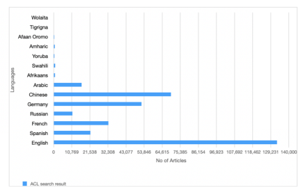
Figure 1 : Résultats de recherche d'articles ACL pour les langues à ressources élevées et faibles.
Dans cet article, nous passons en revue les travaux de recherche effectués dans le domaine des tâches sélectionnées de TALN pour quatre langues éthiopiennes. Nous couvrons principalement les 4 langues suivantes, à savoir Amharic (Amh), Afaan Oromo (Orm), Tigrinya (Tir), et Wolaytta (Wal). Nous avons également passé en revue des travaux sur un petit ensemble de langues locales, y compris Awigna (Awn) et Kistane (Gru), spécialement pour les tâches de traduction automatique. Les contributions de cet article sont les suivantes : (1) Rendre compte de l'état de l'art actuel de la recherche en TAL pour les langues éthiopiennes. (2) Discuter des progrès du TAL dans les langues éthiopiennes et des principaux défis et opportunités pour la recherche en TAL éthiopien. (3) Collecter et présenter les ressources publiquement disponibles pour différentes tâches de TAL dans les langues éthiopiennes dans un seul dépôt GitHub qui peut être étendu périodiquement en collaboration avec d'autres chercheurs. Les ensembles de données et les modèles collectés et accessibles au public pour les langues éthiopiennes se trouvent dans notre dépôt GitHub.
2 Détails linguistiques
Cet article évalue les progrès de la recherche en TAL pour quatre langues éthiopiennes : l'amharique, l'afaan oromo, le tigrinya et le wolaytta. Comme l'Éthiopie est un pays multilingue, multiculturel et multiethnique, ces langues sélectionnées ont plus de locuteurs et de locuteurs natifs dans le pays. De plus, nous avons recherché des articles dans les huit principales langues éthiopiennes et pris les quatre premières en fonction de la fréquence dans l'anthologie ACL. Cette section donne quelques descriptions de ces quatre langues ciblées.
Amharique : est une langue éthio-sémitique et afro-asiatique. C'est la langue de travail officielle de la République fédérale démocratique d'Éthiopie (FDRE). Elle compte environ 57 millions de locuteurs, ce qui en fait la deuxième langue sémitique la plus parlée au monde, dont 32 millions sont des locuteurs natifs (Eberhard et al., 2022). D'autres noms connus pour cette langue sont l'Amarigna et l'Amarinya.
Afaan Oromo: est une langue de la famille des langues cushitiques. Le nom de la langue peut être écrit dans différentes alternatives: (Afan, Afaan, affan) Oromo, ou simplement Oromo. Il y a plus de 50 millions de locuteurs oromos natifs (Eberhard et al., 2022).
Tigrinya (ou Tigregna, Tigrinya ou Tigregna) est une famille de langues sémitiques parlée dans la région du Tigré en Éthiopie et en Érythrée. La langue utilise l'écriture Ge'ez avec quelques alphabets supplémentaires qui ont été créés pour la langue Tigrinya et sont étroitement liés au Ge'ez et à l'amharique. La langue compte environ 9,9 millions de locuteurs natifs (Eberhard et al., 2022).
Wolaytta (ou Wolayita, Wolaytegna, Wolaytigna, Welaitta et Welayita) est une famille de langues omotiques parlée dans la zone de Wolaytta en Éthiopie. L'Afan Oromo et le Wolaytta s'écrivent tous deux en alphabet latin.
3 Langues à faibles ressources
Les chercheurs s'intéressant au TAL ont utilisé la disponibilité des données (sous forme de données étiquetées, non étiquetées ou auxiliaires) et les outils et ressources de TAL comme critères pour définir les langues peu dotées (Ranathunga et al., 2021). Selon les travaux de Gereme et al. (2021), les langues peu dotées manquent d'outils et de ressources importants pour le TAL et d'autres solutions technolinguistiques. De plus, les langues peu dotées manquent de nouvelles conceptions de technologies du langage. En raison de toutes ces limitations, il est très difficile de développer de nouvelles méthodes puissantes pour les applications linguistiques (Tonja et al., 2023). Pour les langues riches en ressources telles que l'anglais, l'allemand, le français, l'espagnol, etc., la taille du jeu de données n'est pas un problème car les chercheurs ont créé un grand ensemble de corpus et d'outils pour de nombreuses tâches de TAL. Cependant, de nombreuses autres langues sont considérées comme des langues à faibles ressources (Fesseha et al., 2021a). Avec cette intuition, les langues éthiopiennes telles que l'amharique (Gereme et al., 2021), Afaan Oromo (Abate et al., 2019), Tigrinya (Osman et Mikami, 2012), Wolayitta (Tonja et al., 2023) sont des langues "à faibles ressources" en raison du manque de ressources de données, de matériaux linguistiques et d'outils. Cela a affecté le développement de différentes tâches et outils de TAL.
4 Sources de ressources et outils possibles
Les données sont l'un des éléments essentiels de toute application NLP. La disponibilité des données est l'un des critères permettant de classer une langue comme langue à ressources élevées ou faibles (Ranathunga et al., 2021). Comme discuté dans la Section 3, les langues éthiopiennes appartiennent aux langues à faibles ressources en raison de l'indisponibilité des données. Le Tableau 1 montre quelques sources de données numériques possibles pour différentes tâches de TAL.
Comme les données, les outils de TAL sont également l'un des blocs de construction des applications de TAL, et l'indisponibilité de ces outils pour une certaine langue affecte également directement le développement des applications de TAL pour cette langue. Le tableau 2 montre les outils de TAL disponibles pour les langues éthiopiennes. Comme on peut le voir dans les tableaux 1 et 2, il y a encore très peu de sources pour recueillir des données numériques et des outils disponibles pour les langues éthiopiennes.
5 tâches NLP et leur progression
Dans cette section, nous discutons des travaux réalisés, des jeux de données de quelles tailles ont été utilisés, des méthodes ou approches que les auteurs ont proposées, ainsi que de la disponibilité de leurs jeux de données et modèles pour les tâches de traitement automatique des langues et de leurs progrès dans les langues éthiopiennes sélectionnées. Nous nous sommes concentrés sur les tâches de traduction automatique (TA), d'étiquetage de catégorie grammaticale (POS), de reconnaissance d'entités nommées (NER), de classification de questions (QC), de systèmes de questions-réponses (QA), de classification de textes et de résumé automatique en raison du grand nombre de travaux réalisés pour les langues peu dotées ciblées. Les modèles disponibles, les ensembles de données pour les tâches et leurs liens se trouvent dans le tableau 7.
5.1 POS Tagging
L'étiquetage POS est l'une des tâches populaires du TAL qui consiste à catégoriser les mots d'un texte (corpus) en correspondance avec une catégorie grammaticale particulière, selon la définition du mot et son contexte (Pailai et al., 2013).
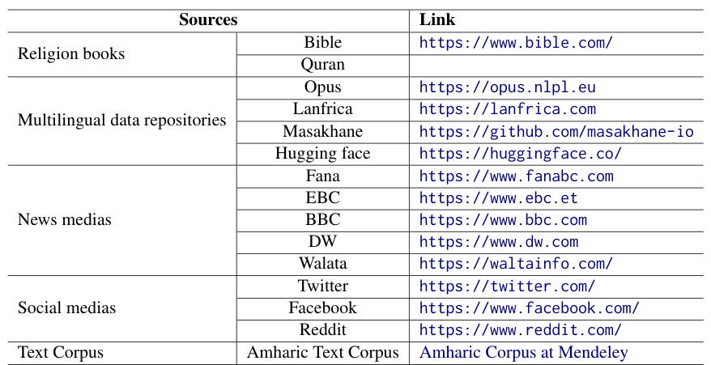
Tableau 1: Sources de données possibles
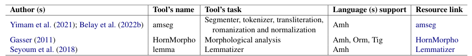
Tableau 2: Outils linguistiques disponibles qui sont développés pour les langues éthiopiennes à faibles ressources.
Le tableau 3 résume l’état actuel de la recherche sur le marquage POS pour certaines langues éthiopiennes. Le tableau indique le(s) nom(s) de l'auteur (des auteurs), la taille de l'ensemble de données, la méthode utilisée, le score de précision des modèles et la disponibilité des ensembles de données et des modèles dans des dépôts publics.
Pour l'amharique, sept études sont répertoriées, qui ont utilisé différentes approches telles que les champs aléatoires conditionnels (CRF), l'entropie maximale (MaxEnt), les machines à vecteurs de support (SVM), CRFSuit et l'étiqueteur à base de mémoire (MBT). Le score de précision le plus élevé a été obtenu en utilisant l'approche CRFSuit par Gashaw et Shashirekha (2020). Pour Afaan Oromo, deux études sont répertoriées qui utilisaient le modèle de Markov caché (HMM) et le marqueur de Brill. Le score de précision le plus élevé a été obtenu en utilisant l'étiqueteur de Bill par Ayana (2015). Pour Tigrinya, deux études sont répertoriées qui ont utilisé le CRF et la mémoire à long terme (LSTM). Le score de précision le plus élevé a été obtenu par l'approche LSTM chez Tesfagergish et Kapocute-Dzikiene (2020) et pour Wolayitta, une étude est répertoriée, qui a utilisé HMM et a obtenu un score de précision de 92,96.
D'après le Tableau 3, nous pouvons conclure que l'étiquetage morpho-syntaxique (POS) est moins étudié pour les langues éthiopiennes, la majorité des travaux ayant été réalisés pour l'amharique plutôt que pour les autres langues. Parmi les travaux discutés dans le Tableau 3, seul le travail de Yimam et al. (2021) a rendu leurs modèles et leurs jeux de données disponibles pour un usage public.
5.2 Reconnaissance d'entités nommées (NER)
Dans cette section, nous présentons des travaux liés à la reconnaissance d'entités nommées (NER) pour les langues éthiopiennes.
Pour Amharic, Mehamed (2019) a mené l’expérience NER sur un corpus de 10 405 jetons en utilisant le classificateur CRF. Alemu (2013) a mené les expériences sur un corpus développé manuellement de 13 538 mots avec le schéma d'étiquetage de Stanford. Tadele (2014) a utilisé un hybride d'apprentissage automatique (arbres de décision et machines à vecteurs de support) et de méthodes basées sur des règles. Les ensembles de données pour ces œuvres ne sont pas disponibles. Le travail réalisé par le groupe Masakhane NLP (Adelani et al., 2021) a analysé un jeu de données de 10 langues africaines et a mené une évaluation empirique approfondie des méthodes de pointe dans les deux contextes d'apprentissage supervisé et par transfert, y compris l'amharique. Les données et les modèles sont disponibles sur GitHub. Gambäck et Sikdar (2017); Yimam et al. (2021); Sikdar et Gambäck (2018) ont construit un système NER basé sur l’apprentissage profond pour l’amharique en utilisant l’ensemble de données NER du projet SAY. Jibril et Tantğ (2022) ont proposé un système de reconnaissance NER basé sur un transformateur pour l’amharique en utilisant un nouvel ensemble de données annoté de 182 691 mots. Tous les ensembles de données NER disponibles pour les langues éthiopiennes sont présentés dans le tableau 7.
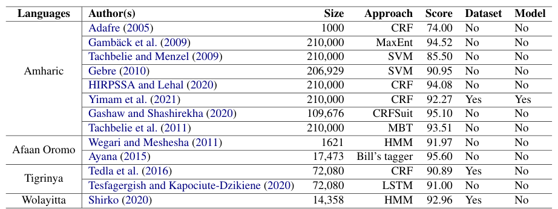
Tableau 3 : Résumé des travaux connexes pour certaines langues éthiopiennes dans les tâches d'étiquetage POS, Taille indique le nombre de tokens utilisés pendant l'expérience, Score indique les résultats du modèle le plus performant évalués à l'aide du score d'exactitude, Jeu de données et Modèle indiquent la disponibilité du jeu de données et des modèles dans des dépôts accessibles au public.
Pour l’Afan Oromo, le travail de Legesse (2012) a mis en œuvre le premier système NER utilisant une approche hybride (basée sur des règles et statistique) qui contient 23k mots. Abdi (2015) traite de NER dans une approche hybride (apprentissage automatique et basée sur des règles) en utilisant les données des travaux de Legesse (2012). Abafogi (2021) a adopté le renforcement de la NER par des combinaisons d'approches telles que l'apprentissage automatique, les règles stockées et la correspondance de motifs en utilisant 44k mots, dont environ 7,8k étaient des entités nommées. Gardie et Solomon (2022) ont développé un système de NER en utilisant 12 479 instances de données et les approches BiLSTM, plongement lexical et CNN. Cependant, aucun des ensembles de données dans les œuvres ci-dessus d'Afan Oromo n'est accessible au public.
Pour le tigrigna, la recherche de Yohannes et Amagasa (2022b) a proposé une méthode pour la reconnaissance d'entités nommées (NER) en utilisant un modèle de langage pré-entraîné, TigRoBERTa. Le jeu de données contient 69 309 mots annotés manuellement. Plus tard, Yohannes et Amagasa (2022a) employèrent Tigrinya NER avec un ajout de 40 627 mots.
Le seul travail de reconnaissance d'entités nommées (NER) tenté sur la langue Wolaytta a été mené par Biruk (2021) en utilisant une approche d'apprentissage automatique. Les figures 2 et 3 montrent les types de publications NER et la disponibilité des ensembles de données pour les langues éthiopiennes ciblées, respectivement. Nous pouvons résumer que NER est un peu plus développé que le marquage POS pour les langues Afan Oromo, Tigriyna et Wolaytta. Cependant, comme pour le marquage POS, seuls les petits ensembles de données NER en amharique présentés à la figure 3 sont disponibles.
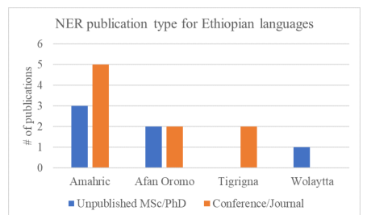
Figure 2 : Types de publications NER pour les langues éthiopiennes : la description de la figure est la même que dans la Figure 4. Le wolaytta n'a pas de travaux publiés dans des conférences/revues.
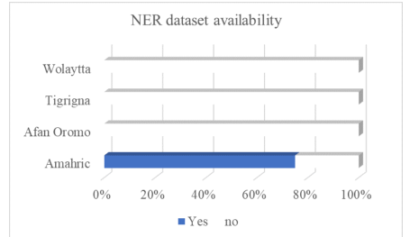
Figure 3: Disponibilité des ensembles de données NER par langue: comme on peut le voir, relativement plus d'ensembles de données NER sont disponibles uniquement pour la langue amharique.
5.3 Traduction automatique (MT)
Avec la popularité croissante des tâches informatiques et l'extension de la portée d'Internet à diverses communautés multilingues, le domaine de la MT progresse rapidement (Kenny, 2018). Bien que des résultats de traduction impressionnants aient été obtenus pour des paires de langues disposant de ressources abondantes, telles que l'anglais-espagnol, l'anglais-français, l'anglais-russe et l'anglais-portugais, les systèmes de TA éprouvent des difficultés dans des environnements aux ressources limitées, où l'insuffisance des données d'apprentissage pour certaines langues est le principal obstacle. Dans cette section, nous discutons des progrès de MT pour les langues éthiopiennes dans trois catégories: i) Travaux centrés sur l'anglais effectués pour les langues éthiopiennes ciblées ci-dessus avec une paire anglaise, ii) Ethiopian-Ethiopian travaux réalisés pour des couples de langues éthiopiennes sans faire intervenir d'autres langues; et (iii) MT multilingue - travaux réalisés pour les langues éthiopiennes avec d'autres langues dans un cadre multilingue.
Le tableau 4 résume plusieurs études sur la MT dans certaines langues éthiopiennes, en se concentrant sur les trois catégories. Les études varient en taille de l'ensemble de données parallèle, l'approche, le score, la disponibilité de l'ensemble de données et le modèle pour un usage public. Pour les paires de langues centrées sur l'anglais, cinq études ont utilisé des paires de langues Amh-Eng. Biadgligne et Smaïli (2021) ont utilisé la NMT, et la taille de leur ensemble de données était de 231 898, tandis que Gezmu et al (2021) ont utilisé la NMT et avaient une taille d’ensemble de données de 145 364. Ashengo et coll. (2021) ont utilisé RNNMT, et la taille de leur ensemble de données était de 8 603. L’étude de Biadgligne et Smaïli (2022) a utilisé la NMT, et leur taille d’ensemble de données était la même que celle de Biadgligne et Smaïli (2021). Belay et al. (2022a) ont utilisé NMT avec une taille de jeu de données de 1 140 130. Enfin, quatre études ont utilisé des paires de langues: Orm-Eng, Tir-Eng, et Wol-Eng. Ces études ont appliqué différentes approches telles que SMT, NMT et hybride, avec des tailles d'ensembles de données allant de 6 400 à 336 000.
Trois études ont utilisé l'amharique (Amh) et d'autres paires de langues locales, avec des approches différentes et des tailles d'ensembles de données parallèles. L’étude de Mekonnen (2019) a utilisé des paires de langues Amh-Awn, avec une taille d’ensemble de données parallèles de 5 000 et une approche SMT, tandis que l’étude de Woldeyohannis et Meshesha (2018) a travaillé sur des paires de langues Amh-Tir avec une taille d’ensemble de données parallèles de 27 000 et une approche SMT. Enfin, l’étude d’Ashengo et al. (2021) a utilisé des paires de langues Amh-Gur avec une taille d’ensemble de données parallèles de 9 225 et une approche NMT. La performance dans ces études variait de 7,73 à 17,26 dans les scores BLEU. Pour la MT multilingue, nous avons trouvé deux études de Lakew et al. (2020) et Vegi et al. (2022) qui incluaient les langues éthiopiennes avec d’autres langues africaines.
Dans le tableau 4, nous pouvons voir certaines des conclusions notables des études, par exemple, Solomon et coll. (2017) ont obtenu un score BLEU élevé de 47,00 avec leur approche SMT, bien que la taille de leur ensemble de données parallèles soit petite (6 400). L’étude de Berihu et coll. (2020) a utilisé une approche hybride et a obtenu un score BLEU élevé de 67,57 avec une taille d’ensemble de données parallèles de 32 000. Kidane et coll. (2021) ont utilisé la NMT avec un ensemble de données parallèles de grande taille (336 000), mais leur score BLEU était relativement faible (15,52). Tonja et coll. (2021) et Tonja et coll. (2023) ont utilisé la NMT pour les paires de langues Wal-Eng, avec des ensembles de données parallèles de 26 943, mais leurs scores étaient relativement faibles (13,8 et 16,1, respectivement). Enfin, dans les études de MT multilingues, le travail de Lakew et al. (2020) a rendu les jeux de données et les modèles disponibles pour un usage public. Une analyse plus approfondie des études de MT pour les langues sélectionnées est discutée en Annexe A.
5.4 Systèmes de questions-réponses et classification
Même si la classification de questions (QC) et les systèmes de questions-réponses (QA) ont été largement étudiés pour diverses langues, ils n'ont guère été étudiés pour l'amharique, l'afaan oromo, le tigrigna et le wolaytta. Certaines des recherches sur la QC et la QA menées pour ces langues sont discutées ci-dessous.
Pour l'amharique, le travail de Habtamu (2021) a implémenté un modèle de QC amharique basé sur un réseau de neurones convolutifs (CNN) en utilisant environ 8k questions amhariques génériques provenant de différents sites web et étiquetées en 6 classes, similaires aux classes de questions proposées par Li et Roth (2006). Le travail réalisé par Taffa et Libsie (2019) a développé une réponse aux questions non factuelles en amharique pour les questions de biographie, de définition et de description. Yimam et Libsie (2009) ont développé un système de questions-réponses amharique pour les questions factuelles. Cependant, les ensembles de données des travaux susmentionnés ne sont toujours pas disponibles pour une enquête plus approfondie. Nega et al. (2016) ont présenté un QC en amharique basé sur l’apprentissage automatique (SVM) à l’aide d’un total de 180 questions collectées dans le domaine de l’agriculture. Enfin, le travail réalisé par Belay et al. (2022b) a construit un ensemble de données de classification de questions à partir d'un canal public Telegram appelé Ask Anything Ethiopia (https://t.me/askAnythingEthiopia) et a développé des classificateurs de questions amhariques basés sur l'apprentissage profond. Les ensembles de données de Nega et coll. (2016) et de Belay et coll. (2022b) sont publiés dans un référentiel GitHub (voir le tableau 7).
Pour Afaan Oromo, le travail de Chaltu (2016) a proposé la liste Afaan Oromo, la définition et le système d’assurance qualité de la description. Daba (2021) a amélioré le résultat du travail de Chaltu (2016) pour les questions non factuelles de l'Afaan Oromo. AMARE (2016) a réalisé le système de questions-réponses factuelles du Tigrinya en utilisant 1200 questions. Aucun travail de QC ou de QA n'a été effectué précédemment pour la langue Wolaytta. Les figures 4 et 5 montrent les types de publication QC/QA et la disponibilité des ensembles de données pour les langues éthiopiennes, respectivement.
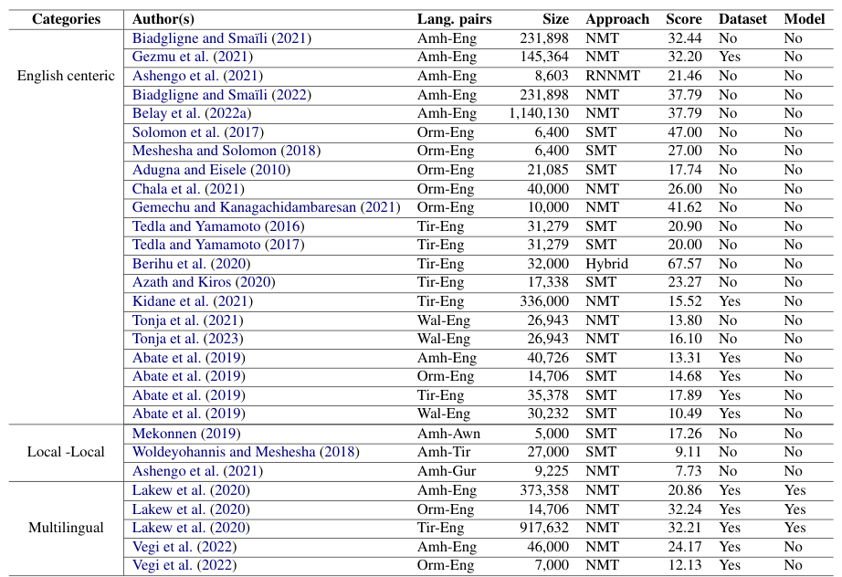
Tableau 4 : Résumé des travaux connexes pour les langues éthiopiennes sélectionnées dans la tâche de MT, Lang. pairs représente les paires de langues utilisées pour la traduction, Size indique le nombre de phrases parallèles utilisées dans chaque article, Score montre les résultats du modèle performant évalués à l'aide du score BLEU, Dataset et Model indiquent la disponibilité des jeux de données et des modèles dans des dépôts accessibles au public, respectivement.
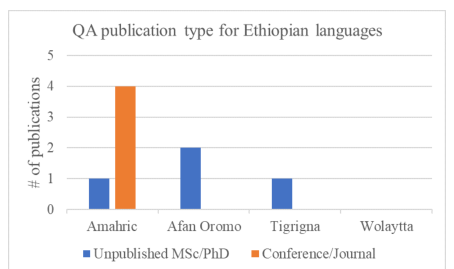
Figure 4 : Type de publication QC/QA : MSc/Ph.D. est une thèse de maîtrise ou de doctorat non publiée, téléversée dans des dépôts et archives d'universités locales. Une étiquette Conférence/Journal est un travail publié dans une conférence ou un journal.
D'après les tableaux 4 et 5, nous pouvons conclure que la QC et la QA sont moins étudiées pour les langues éthiopiennes, comparativement aux autres tâches de TAL. La plupart des travaux réalisés sont des thèses de MSc ou de Ph.D. non publiées. Relativement, l'amharique a reçu plus d'attention pour les tâches de QA et QC.
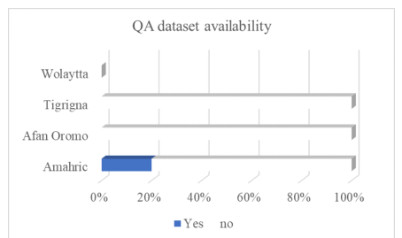
Figure 5 : Disponibilité des jeux de données QA par langue : comme on peut le voir, certains jeux de données QC sont disponibles pour l'amharique mais pas pour les autres langues.
5.5 Classification de texte
5.5.1 Discours de haine
Malgré de nombreux travaux menés sur la détection du discours de haine pour les langues riches en ressources, les langues à faibles ressources telles que l’amharique, l’afan oromo, le tigrinya et le wolaytta sont moins étudiées. Le tableau 5 présente un résumé des travaux connexes sur la détection du discours de haine pour certaines langues éthiopiennes. Le tableau inclut le nom de la langue, le(s) auteur(s) de l'article, la taille de l'ensemble de données utilisé, l'algorithme utilisé, le score obtenu, ainsi que la disponibilité de l'ensemble de données et du modèle dans des dépôts accessibles au public.
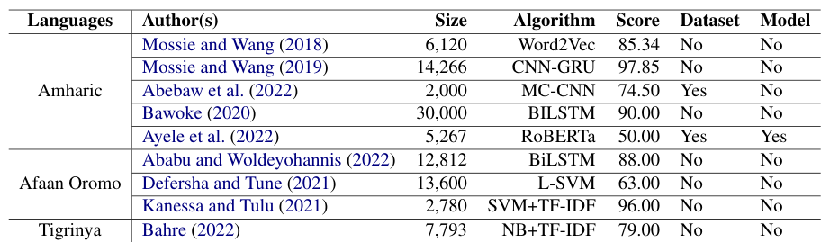
Tableau 5: Résumé des travaux connexes pour les langues éthiopiennes sélectionnées dans les tâches de discours de haine, Taille montre le nombre de phrases utilisées pendant l'expérience, Score montre les résultats du modèle surperformé évalués à l'aide du score F1, Ensemble de données et Modèle montrent la disponibilité de l'ensemble de données et des modèles dans les référentiels accessibles au public, respectivement.
Pour l'amharique, cinq études ont été menées avec différentes approches. Mossie et Wang (2018) ont utilisé Word2Vec pour détecter le discours de haine dans un ensemble de données de 6 120 phrases et ont obtenu un score F1 de 85,34. Dans une autre étude, Mossie et Wang (2019) ont utilisé CNN-GRU dans un ensemble de données de 14 266 phrases et ont obtenu un score F1 de 97,85. Abebaw et al. (2022) ont utilisé MC-CNN dans un ensemble de données de 2 000 phrases, obtenant un score F1 de 74,50. Bawoke (2020) a utilisé BILSTM sur un ensemble de données de 30 000 phrases, obtenant un score F1 de 90.00. Enfin, Ayele et al. (2022) ont utilisé RoBERTa sur un ensemble de données de 5 267 phrases, obtenant un score F1 de 50,00.
Pour Afaan Oromo, trois études ont été menées, et aucune d’entre elles n’a rendu son ensemble de données ou son modèle accessible au public. Ababu et Woldeyohannis (2022) ont utilisé BiLSTM sur un ensemble de données de 12 812 phrases, obtenant un score F1 de 88,00. Defersha et Tune (2021) ont utilisé L-SVM sur un ensemble de données de 13 600 phrases, obtenant un score F1 de 63,00. Kanessa et Tulu (2021) ont utilisé SVM + TFIDF sur un ensemble de données de 2 780 phrases, obtenant un score F1 de 96,00. Bahre (2022) a utilisé NB+TF-IDF sur un jeu de données de 7 793 phrases en langue tigrinya et a obtenu un score F1 de 79,00. Le jeu de données et le modèle utilisés dans cette étude n'étaient pas accessibles au public. En résumé, le tableau 5 montre que la détection des discours de haine dans les langues éthiopiennes est l'un des sujets d'intérêt de recherche. Cependant, à l'instar d'autres tâches, il y a encore un manque d'ensembles de données et de modèles accessibles au public, ce qui pourrait entraver le développement et l'évaluation de la recherche future. Il convient de noter que seules deux des neuf études ont rendu leur ensemble de données et leur modèle accessibles au public. Nous pouvons également voir dans le tableau 5 que pour la langue Wolayitta, il n’y a pas de documentation trouvée pour la tâche sur le discours haineux. De plus, les scores F1 obtenus varient grandement entre les différentes études, ce qui indique que pour toutes les tâches les résultats ne sont pas comparables puisque les ensembles de données sont différents.
5.5.2 Analyse des sentiments
Le tableau 6 résume les études récentes sur les tâches d'analyse des sentiments pour les langues éthiopiennes sélectionnées, y compris l'amharique, l'afaan oromo et le tigrinya. Les études utilisent divers algorithmes tels que Role2Vec, Naïve Bayes, LSTM, SVM, hybride, et XLNet. Pour Amharic, Yimam et al. (2020) a obtenu le score F1 le plus élevé de 58,48 % en utilisant Role2Vec avec un ensemble de données et un modèle publiquement disponible, tandis que Abeje et al. (2022) a atteint la précision la plus élevée de 90,10 % en utilisant LSTM. Pour Afaan Oromo, la plus haute précision de 93,00 % a été atteinte par Oljira (2020) en utilisant Naïve Bayes, tandis que Rase (2020) a atteint une précision de 87,70 % en utilisant LSTM. En revanche, Wayessa et Abas (2020) ont obtenu une précision de 90,00 % en utilisant SVM. Pour le tigrigna, Tela (2020) a obtenu un score F1 de 81,62 % en utilisant XLNet avec un ensemble de données de 4000 étiquettes manuelles. Pour Wolaita, comme pour la tâche de discours de haine, il n'y a pas de littérature trouvée pour la tâche d'analyse des sentiments. Aucun des ensembles de données et des modèles pour Afaan Oromo, Tigrinya, et la plupart des œuvres pour Amharic ne sont accessibles au public, donc les résultats ne sont pas non plus comparables. Cela suggère que plus de travail doit être fait pour créer des ensembles de données et des modèles accessibles au public pour les tâches d'analyse des sentiments dans les langues éthiopiennes. En conclusion, les études du tableau 6 indiquent le potentiel de l'analyse des sentiments dans les langues éthiopiennes. Les résultats montrent que la performance des modèles varie en fonction de l'algorithme, de l'ensemble de données et de la disponibilité du modèle. Néanmoins, il est nécessaire de mener davantage de recherches pour créer des ensembles de données et des modèles accessibles au public afin d'améliorer la performance des modèles et de les rendre disponibles pour une utilisation dans différentes applications.
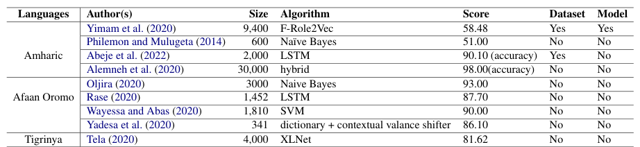
Tableau 6 : Résumé des travaux connexes pour les langues éthiopiennes sélectionnées dans les tâches d'analyse des sentiments, Size indique la taille du jeu de données annoté utilisé lors de l'expérience, Score montre les résultats du modèle le mieux performant évalués à l'aide du score F1, Dataset et Model indiquent la disponibilité des jeux de données et des modèles dans des dépôts accessibles au public, respectivement.
5.5.3 Classification des nouvelles et résumé des textes
Le développement d'un ensemble de données de classification de textes d'actualités en amharique est décrit dans une publication d'Azime et Mohammed (2021). L'ensemble de données est constitué de 50 000 phrases et est classé en six catégories, notamment les actualités locales, le sport, la politique, les actualités internationales, les affaires et le divertissement. Fesseha et al. (2021b) ont créé un ensemble de données de classification de textes en tigrigna avec annotation manuelle, constitué de 30 000 phrases d'actualités catégorisées en six classes, notamment le sport, l'agriculture, la politique, la religion, l'éducation et la santé. Pour améliorer leur analyse, les auteurs ont étudié l'utilisation de diverses techniques de plongement lexical telles que CNN, le sac de mots, le skip-gram et fastText. L'ensemble de données utilisé pour ces expériences a été rendu public, comme le montre le tableau 7. Le travail de Megersa (2020) a utilisé un ensemble de données collecté auprès de l'Agence de presse éthiopienne pour expérimenter avec 8 et 20 classes, mais malheureusement, le modèle et les ensembles de données ne sont pas disponibles publiquement.
Hasan et al. (2021) ont créé un jeu de données de résumé automatique abstractif pour 44 langues différentes en utilisant des articles de la BBC collectés par exploration systématique. Le jeu de données résultant comprend 5461 échantillons en amharique, 4827 en tigrigna et 5738 en afaan oromo, qui peuvent potentiellement être utilisés pour diverses tâches liées aux langues éthiopiennes. Les auteurs ont affiné les modèles mt5 en utilisant cet ensemble de données et ont ensuite rapporté les résultats. Toutes les données et codes disponibles publiquement sont listés dans le Tableau 7 pour exploration. En général, la classification des nouvelles et la synthèse des textes n'ont pas encore été correctement étudiées pour les langues éthiopiennes.
6 Résumé des défis, des possibilités et des orientations futures
Défis : Sur la base des résultats des études ci-dessus, nous avons identifié les défis suivants : (i) Une rareté de données publiquement disponibles pour les langues éthiopiennes. Comme les données et les ressources ne sont pas majoritairement publiquement disponibles, les chercheurs vont "réinventer la roue" en essayant de résoudre le problème. Cela laisse la recherche sur les langues à faibles ressources habituellement « dans les limbes », car il n'est pas clair si le problème est abordé ou non. Cela rend en outre difficile l'entraînement de différentes tâches de TAL pour les langues éthiopiennes et limite la portée des applications de TAL. De plus, il est très difficile de reproduire les résultats puisque les ensembles de données de référence ne sont pas conservés. (ii) Un manque de ressources, d'outils et d'infrastructures pour la recherche en TAL dans les langues éthiopiennes à faibles ressources peut rendre difficile l'attraction de financements et de chercheurs talentueux pour travailler sur le problème. (iii) Peu de personnes s'intéressent au TAL pour les langues éthiopiennes à faibles ressources. Cela peut rendre difficile l'attraction de ressources et de soutien pour la recherche en TAL dans ces langues.
Opportunités: Voici quelques suggestions et idées pour l'avenir qui aideront à obtenir plus de langues éthiopiennes dans la recherche NLP: (i) Il est nécessaire de faire plus de travail pour collecter et étiqueter des données dans les langues éthiopiennes. Cela nécessitera une collaboration entre linguistes, experts en TAL et locuteurs natifs des langues. (ii) Comme les résultats des tâches de TAL abordées ne sont pas comparables puisque les jeux de données sont différents, un enjeu majeur à traiter à l'avenir est la publication de jeux de données de banc d'essai sur lesquels les chercheurs peuvent travailler pour améliorer les performances et développer de nouvelles approches. Cela nécessitera un financement et une collaboration soutenus entre les chercheurs. iii) La mise au point de systèmes de traduction automatique pour les langues éthiopiennes à faibles ressources peut contribuer à combler le fossé linguistique et permettre la communication entre les différentes langues. (iv) Les techniques d'apprentissage par transfert peuvent être utilisées pour exploiter des modèles pré-entraînés dans des langues bien dotées en ressources afin d'améliorer les performances des modèles dans des langues peu dotées en ressources. (v) La participation des communautés locales et des parties prenantes est cruciale pour le succès de la recherche en TAL sur les langues éthiopiennes peu dotées en ressources. Les personnes de la communauté peuvent fournir aux chercheurs et aux développeurs des informations importantes sur la langue et la culture.
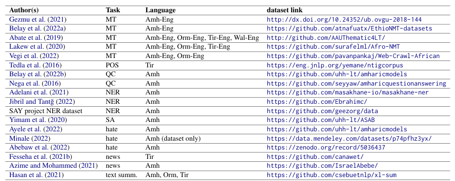
Tableau 7 : Ensembles de données disponibles pour les langues éthiopiennes.
Impact de ce travail et perspectives d'avenir : Les résultats de cette enquête pourraient être utilisés pour soutenir les initiatives de recherche futures dans le domaine du TAL des langues éthiopiennes. Les chercheurs peuvent utiliser les résultats de l'enquête pour identifier les domaines nécessitant des investigations plus approfondies et pour développer des propositions de recherche qui abordent les défis et les opportunités identifiés dans l'enquête. Ce travail aide également à mener plus de relevés et à élaborer une démarcation des langues à faibles ressources. La démarcation aide à identifier les langues qui ont besoin de plus d'attention de la recherche NLP. L'ajout de plus de langues éthiopiennes à la recherche en TAL nécessitera la collaboration des chercheurs, des linguistes et des locuteurs natifs de ces langues ; par conséquent, à un moment donné, ces langues ne seront plus considérées comme des langues à ressources limitées. De plus, nous soulignons avec prudence que toutes les lacunes et les problèmes difficiles ne peuvent pas être résolus instantanément et facilement par les chercheurs et les équipes de recherche seuls. Certains de ces problèmes nécessitent une coopération communautaire soutenue ainsi qu'un financement de la recherche significatif de la part des organisations de financement académique. Les difficultés que nous avons discutées dans cet article sont basées sur ce que nous avons appris des travaux de recherche publiés et un rapide examen des corpus disponibles. Des études supplémentaires avec une analyse plus complète, telles que des questionnaires adressés aux auteurs et utilisateurs de ressources, ou une inspection plus systématique des données disponibles, peuvent fournir une compréhension plus approfondie des causes de ces problèmes et suggérer des solutions efficaces.
7 Conclusion
Dans ce travail, nous avons étudié les tâches de TAL les plus courantes et les travaux de recherche menés dans quatre langues éthiopiennes. Nous avons exploré les principales directions de la recherche en TAL, les progrès, les défis et les opportunités pour les langues éthiopiennes. Nos résultats ont révélé qu'une quantité importante de recherches a été centrée sur les tâches de traduction automatique centrées sur l'anglais ou l'amharique. Malgré la présence de nombreuses langues écrites en Éthiopie, seulement quelques-unes d'entre elles ont été explorées dans des études de recherche courantes. En outre, nous avons observé une faible prévalence de publications de ressources précieuses dans les lieux de conférence internationaux. La majorité des travaux sont des mémoires de master. Les ensembles de données, modèles et outils accessibles au public sont publiés dans un référentiel GitHub centralisé. À l'avenir, nous prévoyons de mener une enquête sur davantage de langues africaines et d'essayer de proposer une ligne de démarcation des ressources en TAL qui pourrait aider les bailleurs de fonds à prioriser les sujets de recherche et les langues.
Notes
1 Lien vers le dépôt GitHub de l'enquête https://github.com/EthioNLP/Ethiopian-Language-Survey
2 Lien vers le dépôt GitHub de l'enquête https://github.com/EthioNLP/Ethiopian-Language-Survey
Références
Teshome Mulugeta Ababu and Michael Melese Woldeyohannis. 2022. Afaan oromo hate speech detection and classification on social media. In Proceedings of the Thirteenth Language Resources and Evaluation Conference, pages 6612-6619.
Abdo Ababor Abafogi. 2021. Boosting afaan oromo named entity recognition with multiple methods. International Journal of Information Engineering and Electronic Business (IJIEEB), 13(5):51-59.
Solomon Teferra Abate, Michael Melese, Martha Yifiru Tachbelie, Million Meshesha, Solomon Atinafu, Wondwossen Mulugeta, Yaregal Assabie, Hafte Abera, Biniyam Ephrem, Tewodros Gebreselassie, et al. 2019. English-ethiopian languages statistical machine translation. In Proceedings of the 2019 Workshop on Widening NLP, pages 27-30.
Sani Genemo Abdi. 2015. Afaan Oromo Named Entity Recognition Using Hybrid Approach. Unpublished master thesis, Addis Ababa University.
Zeleke Abebaw, Andreas Rauber, and Solomon Atnafu. 2022. Multi-channel convolutional neural network for hate speech detection in social media. In Advances of Science and Technology: 9th EAI International Conference, ICAST 2021, Hybrid Event, Bahir Dar, Ethiopia, August 27-29, 2021, Proceedings, Part I, pages 603-618. Springer.
Bekalu Tadele Abeje, Ayodeji Olalekan Salau, Habtamu Abate Ebabu, and Aleka Melese Ayalew. 2022. Comparative analysis of deep learning models for aspect level amharic news sentiment analysis. In 2022 International Conference on Decision Aid Sciences and Applications (DASA), pages 1628-1633. IEEE.
Sisay Fissaha Adafre. 2005. Part of speech tagging for amharic using conditional random fields. In Proceedings of the ACL workshop on computational approaches to semitic languages, pages 47-54.
David Ifeoluwa Adelani, Jade Abbott, Graham Neubig, Daniel D'souza, Julia Kreutzer, Constantine Lignos, Chester Palen-Michel, Happy Buzaaba, Shruti Rijhwani, Sebastian Ruder, Stephen Mayhew, Israel Abebe Azime, Shamsuddeen H. Muhammad, Chris Chinenye Emezue, Joyce Nakatumba-Nabende, Perez Ogayo, Aremu Anuoluwapo, Catherine Gitau, Derguene Mbaye, Jesujoba Alabi, Seid Muhie Yimam, Tajuddeen Rabiu Gwadabe, Ignatius Ezeani, Rubungo Andre Niyongabo, Jonathan Mukiibi, Verrah Otiende, Iroro Orife, Davis David, Samba Ngom, Tosin Adewumi, Paul Rayson, Mofetoluwa Adeyemi, Gerald Muriuki, Emmanuel Anebi, Chiamaka Chukwuneke, Nkiruka Odu, Eric Peter Wairagala, Samuel Oyerinde, Clemencia Siro, Tobius Saul Bateesa, Temilola Oloyede, Yvonne Wambui, Victor Akinode, Deborah Nabagereka, Maurice Katusiime, Ayodele Awokoya, Mouhamadane MBOUP, Dibora Gebreyohannes, Henok Tilaye, Kelechi Nwaike, Degaga Wolde, Abdoulaye Faye, Blessing Sibanda, Orevaoghene Ahia, Bonaventure F. P. Dossou, Kelechi Ogueji, Thierno Ibrahima DIOP, Abdoulaye Diallo, Adewale Akinfaderin, Tendai Marengereke, and Salomey Osei. 2021. MasakhaNER: Named Entity Recognition for African Languages. Transactions of the Association for Computational Linguistics, 9:1116-1131.
Sisay Adugna and Andreas Eisele. 2010. English-oromo machine translation: An experiment using a statistical approach. In Proceedings of the Seventh International Conference on Language Resources and Evaluation (LREC'10).
Girma Neshir Alemneh, Andreas Rauber, and Solomon Atnafu. 2020. Negation handling for amharic sentiment classification. In Proceedings of the The Fourth Widening Natural Language Processing Workshop, pages 4-6.
Besufikad Alemu. 2013. A named entity recognition for Amharic. Unpublished master thesis, Addis Ababa University.
KIBROM HAFTU AMARE. 2016. TIGRIGNA QUESTION ANSWERING SYSTEM FOR FACTOID QUESTIONS. Unpublished master thesis, Addis Ababa University.
Yeabsira Asefa Ashengo, Rosa Tsegaye Aga, and Surafel Lemma Abebe. 2021. Context based machine translation with recurrent neural network for english-amharic translation. Machine Translation, 35(1):19-36.
Abraham Gizaw Ayana. 2015. Towards improving brill's tagger lexical and transformation rule for afaan oromo language. Department of Geographic Information Science, Hawassa Universty, Hawassa.
Abinew Ali Ayele, Skadi Dinter, Tadesse Destaw Belay, Tesfa Tegegne Asfaw, Seid Muhie Yimam, and Chris Biemann. 2022. The 5js in ethiopia: Amharic hate speech data annotation using toloka crowdsourcing platform. In 2022 International Conference on Information and Communication Technology for Development for Africa (ICT4DA), pages 114-120. IEEE.
M Azath and Tsegay Kiros. 2020. Statistical machine translator for english to tigrigna translation. Int. J. Sci. Technol. Res, 9(1):2095-2099.
Israel Abebe Azime and Nebil Mohammed. 2021. An amharic news text classification dataset. CoRR, abs/2103.05639.
Weldemariam Bahre. 2022. Hate Speech Detection from Facebook Social Media Posts and Comments in Tigrigna language. Ph.D. thesis, St. Mary's University.
Emuye Bawoke. 2020. Amharic text hate speech detection in social media using deep learning approach. Ph.D. thesis.
Tadesse Destaw Belay, Atnafu Lambebo Tonja, Olga Kolesnikova, Seid Muhie Yimam, Abinew Ali Ayele, Silesh Bogale Haile, Grigori Sidorov, and Alexander Gelbukh. 2022a. The effect of normalization for bi-directional amharic-english neural machine translation. In 2022 International Conference on Information and Communication Technology for Development for Africa (ICT4DA), pages 84-89. IEEE.
Tadesse Destaw Belay, Seid Muhie Yimam, Abinew Ayele, and Chris Biemann. 2022b. Question answering classification for Amharic social media community based questions. In Proceedings of the 1st Annual Meeting of the ELRA/ISCA Special Interest Group on Under-Resourced Languages, pages 137-145, Marseille, France. European Language Resources Association.
Zemicheal Berihu, Gebremariam Mesfin Assres, Mulugeta Atsbaha, and Tor-Morten Grønli. 2020. Enhancing bi-directional english-tigrigna machine translation using hybrid approach. In Norsk IKT-konferanse for forskning og utdanning, 1.
Yohanens Biadgligne and Kamel Smaïli. 2021. Parallel corpora preparation for english-amharic machine translation. In Advances in Computational Intelligence: 16th International Work-Conference on Artificial Neural Networks, IWANN 2021, Virtual Event, June 16-18, 2021, Proceedings, Part I 16, pages 443-455. Springer.
Yohannes Biadgligne and Kamel Smaïli. 2022. Offline corpus augmentation for english-amharic machine translation. In 2022 5th International Conference on Information and Computer Technologies (ICICT), pages 128-135. IEEE.
Sidamo Biruk. 2021. Named Entity Recognition for Wolaytta Language Using Machine Learning Approach. Unpublished master thesis, Adama Science and Technology University.
Sisay Chala, Bekele Debisa, Amante Diriba, Silas Getachew, Chala Getu, and Solomon Shiferaw. 2021. Crowdsourcing parallel corpus for english-oromo neural machine translation using community engagement platform. arXiv preprint arXiv:2102.07539.
Fita Elanso Chaltu. 2016. Afaan Oromo List, Definition and Description Question Answering System. Unpublished master thesis, Addis Ababa University.
Endale Daba. 2021. Improving Afaan Oromo question answering system: definition, list and description question types for non-factoid questions. Unpublished master thesis, St. Mary's University.
NB Defersha and KK Tune. 2021. Detection of hate speech text in afan oromo social media using machine learning approach. Indian J Sci Technol, 14(31):2567-78.
David M. Eberhard, Gary F. Simons, and Charles D. Fennig. 2022. Ethnologue: Languages of the World. Twenty-fifth edition. Dallas, Texas: SIL International. Url: http://www.ethnologue.com.
Awet Fesseha, Shengwu Xiong, Eshete Derb Emiru, Moussa Diallo, and Abdelghani Dahou. 2021a. Text classification based on convolutional neural networks and word embedding for low-resource languages: Tigrinya. Information, 12(2):52.
Awet Fesseha, Shengwu Xiong, Eshete Derb Emiru, Moussa Diallo, and Abdelghani Dahou. 2021b. Text classification based on convolutional neural networks and word embedding for low-resource languages: Tigrinya. Information, 12(2).
Björn Gambäck, Fredrik Olsson, Atelach Alemu Argaw, and Lars Asker. 2009. Methods for amharic part-of-speech tagging. In First Workshop on Language Technologies for African Languages, March 2009, Athens, Greece.
Björn Gambäck and Utpal Kumar Sikdar. 2017. Named entity recognition for amharic using deep learning. In 2017 IST-Africa Week Conference (IST-Africa), pages 1-8. IEEE.
B Gardie and Z Solomon. 2022. Afan-oromo named entity recognition using bidirectional rnn. Indian Journal of Science and Technology, 15(16):736-741.
Ibrahim Gashaw and H L Shashirekha. 2020. Machine learning approaches for amharic parts-of-speech tagging. arXiv preprint arXiv:2001.03324.
Michael Gasser. 2011. Hornmorpho: a system for morphological processing of amharic, oromo, and tigrinya. In Conference on Human Language Technology for Development, Alexandria, Egypt, pages 94-99.
Binyam Gebrekidan Gebre. 2010. Part of speech tagging for Amharic. Ph.D. thesis, University of Wolverhampton Wolverhampton.
Ebisa A Gemechu and GR Kanagachidambaresan. 2021. Machine learning approach to english-afaan oromo text-text translation: Using attention based neural machine translation. In 2021 4th International Conference on Computing and Communications Technologies (ICCCT), pages 80-85. IEEE.
Fantahun Gereme, William Zhu, Tewodros Ayall, and Dagmawi Alemu. 2021. Combating fake news in "low-resource" languages: Amharic fake news detection accompanied by resource crafting. Information, 12(1):20.
Andargachew Mekonnen Gezmu, Andreas Nürnberger, and Tesfaye Bayu Bati. 2021. Extended parallel corpus for amharic-english machine translation. arXiv preprint arXiv:2104.03543.
Saron Habtamu. 2021. Amharic Question Classification System Using Deep Learning Approach. Unpublished master thesis, Addis Ababa University.
Tahmid Hasan, Abhik Bhattacharjee, Md Saiful Islam, Kazi Samin, Yuan-Fang Li, Yong-Bin Kang, M. Sohel Rahman, and Rifat Shahriyar. 2021. Xl-sum: Large-scale multilingual abstractive summarization for 44 languages. CoRR, abs/2106.13822.
SINTAYEHU HIRPSSA and GS Lehal. 2020. Pos tagging for amharic text: A machine learning approach. INFOCOMP: Journal of Computer Science, 19(1).
Ebrahim Chekol Jibril and A Cüneyd Tantğ. 2022. Anec: An amharic named entity corpus and transformer based recognizer. arXiv preprint arXiv:2207.00785.
Krishna Prakash Kalyanathaya, D Akila, and P Rajesh. 2019. Advances in natural language processing-a survey of current research trends, development tools and industry applications. International Journal of Recent Technology and Engineering, 7(5C):199-202.
Lata Guta Kanessa and Solomon Gizaw Tulu. 2021. Automatic hate and offensive speech detection framework from social media: the case of afaan oromoo language. In 2021 International Conference on Information and Communication Technology for Development for Africa (ICT4DA), pages 42-47. IEEE.
Dorothy Kenny. 2018. Machine translation. In The Routledge handbook of translation and philosophy, pages 428-445. Routledge.
Lidia Kidane, Sachin Kumar, and Yulia Tsvetkov. 2021. An exploration of data augmentation techniques for improving english to tigrinya translation. arXiv preprint arXiv:2103.16789.
Surafel M Lakew, Matteo Negri, and Marco Turchi. 2020. Low resource neural machine translation: A benchmark for five african languages. arXiv preprint arXiv:2003.14402.
Mandefro Legesse. 2012. Named Entity Recognition for Afan Oromo. Unpublished master thesis, Addis Ababa University.
Xin Li and Dan Roth. 2006. Learning question classifiers: the role of semantic information. Natural Language Engineering, 12(3):229-249.
Fanta Teferi Megersa. 2020. Hierarchical afaan oromoo news text classification.
Moges Ahmed Mehamed. 2019. Named entity recognition for Amharic language. LAP LAMBERT Academic Publishing.
Habtamu Mekonnen. 2019. Amharic-awngi machine translation: An experiment using statistical approach. International Journal of Computer Sciences and Engineering, 7:6-10.
Million Meshesha and Yitayew Solomon. 2018. English-afaan oromo statistical machine translation. International Journal of Computational Linguistic (IJCL), 9(1).
Samuel Minale. 2022. Amharic social media dataset for hate speech detection and classification in amharic text with deep learning.
Zewdie Mossie and Jenq-Haur Wang. 2018. Social network hate speech detection for amharic language. Computer Science & Information Technology, page 41.
Zewdie Mossie and Jenq-Haur Wang. 2019. Vulnerable community identification using hate speech detection on social media. Information Processing & Management, page 102087.
Adane Nega, Workneh Chekol, and Alemu Kumlachew. 2016. Question classification in amharic question answering system: Machine learning approach. International Journal of Advanced Studies in Computers, Science and Engineering, 5(10):14-21.
Megersa Oljira. 2020. Sentiment analysis of afaan oromo using machine learning approach. International Journal of Research Studies in Science, Engineering and Technology, 7(9):7-15.
Omer Osman and Yoshiki Mikami. 2012. Stemming tigrinya words for information retrieval. In Proceedings of COLING 2012: Demonstration Papers, pages 345-352.
Jaruwat Pailai, Rachada Kongkachandra, Thepchai Supnithi, and Prachya Boonkwan. 2013. A comparative study on different techniques for thai part-of-speech tagging. In 2013 10th International Conference on Electrical Engineering/Electronics, Computer, Telecommunications and Information Technology, pages 1-5. IEEE.
Wondwossen Philemon and Wondwossen Mulugeta. 2014. A machine learning approach to multi-scale sentiment analysis of amharic online posts. HiLCoE Journal of Computer Science and Technology, 2(2):8.
Surangika Ranathunga, En-Shiun Annie Lee, Marjana Prifti Skenduli, Ravi Shekhar, Mehreen Alam, and Rishemjit Kaur. 2021. Neural machine translation for low-resource languages: A survey. ACM Computing Surveys.
Megersa Oljira Rase. 2020. Sentiment analysis of afaan oromoo facebook media using deep learning approach. New Media and Mass Communication, 90(2020):2224-3267.
Binyam Ephrem Seyoum, Yusuke Miyao, and Baye Yimam Mekonnen. 2018. Universal dependencies for amharic. In Proceedings of the Eleventh International Conference on Language Resources and Evaluation (LREC 2018).
Birhanesh Fikre Shirko. 2020. Part of speech tagging for wolaita language using transformation based learning (tbl) approach.
Utpal Kumar Sikdar and Björn Gambäck. 2018. Named entity recognition for amharic using stack-based deep learning. In Computational Linguistics and Intelligent Text Processing: 18th International Conference, CICLing 2017, Budapest, Hungary, April 17-23, 2017, Revised Selected Papers, Part I 18, pages 276-287. Springer.
Yitayew Solomon, Million Meshesha, and Wendewesen Endale. 2017. Optimal alignment for bi-directional afaan oromo-english statistical machine translation. vol, 3:73-77.
Martha Yifiru Tachbelie, Solomon Teferra Abate, and Laurent Besacier. 2011. Part-of-speech tagging for under-resourced and morphologically rich languages-the case of amharic. HLTD (2011), pages 50-55.
Martha Yifiru Tachbelie and Wolfgang Menzel. 2009. Amharic part-of-speech tagger for factored language modeling. In Proceedings of the International Conference RANLP-2009, pages 428-433.
Mikiyas Tadele. 2014. Amharic named entity recognition using a hybrid approach.
Tilahun Abedissa Taffa and Mulugeta Libsie. 2019. Amharic question answering for biography, definition, and description questions. In Proceedings of the 2019 Workshop on Widening NLP, pages 110-113, Florence, Italy. Association for Computational Linguistics.
Yemane Tedla and Kazuhide Yamamoto. 2016. The effect of shallow segmentation on english-tigrinya statistical machine translation. In 2016 International Conference on Asian Language Processing (IALP), pages 79-82. IEEE.
Yemane Tedla and Kazuhide Yamamoto. 2017. Morphological segmentation for english-to-tigrinya statistical machinetranslation. Int. J. Asian Lang. Process, 27(2):95-110.
Yemane Keleta Tedla, Kazuhide Yamamoto, and Ashuboda Marasinghe. 2016. Tigrinya part-of-speech tagging with morphological patterns and the new nagaoka tigrinya corpus. International Journal of Computer Applications, 146(14).
Abrhalei Frezghi Tela. 2020. Sentiment analysis for low-resource language: The case of tigrinya. Master's thesis, Itä-Suomen yliopisto.
Senait Gebremichael Tesfagergish and Jurgita Kapociute-Dzikiene. 2020. Deep learning-based part-of-speech tagging of the tigrinya language. In Information and Software Technologies: 26th International Conference, ICIST 2020, Kaunas, Lithuania, October 15-17, 2020, Proceedings 26, pages 357-367. Springer.
Atnafu Lambebo Tonja, Olga Kolesnikova, Alexander Gelbukh, and Grigori Sidorov. 2023. Low-resource neural machine translation improvement using source-side monolingual data. Applied Sciences, 13(2):1201.
Atnafu Lambebo Tonja, Michael Melese Woldeyohannis, and Mesay Gemeda Yigezu. 2021. A parallel corpora for bi-directional neural machine translation for low resourced ethiopian languages. In 2021 International Conference on Information and Communication Technology for Development for Africa (ICT4DA), pages 71-76. IEEE.
Pavanpankaj Vegi, Sivabhavani J, Biswajit Paul, Abhinav Mishra, Prashant Banjare, Prasanna K R, and Chitra Viswanathan. 2022. WebCrawl African : A multilingual parallel corpora for African languages. In Proceedings of the Seventh Conference on Machine Translation (WMT), pages 1076-1089, Abu Dhabi, United Arab Emirates (Hybrid). Association for Computational Linguistics.
Negessa Wayessa and Sadik Abas. 2020. Multi-class sentiment analysis from afaan oromo text based on supervised machine learning approaches. International Journal of Research Studies in Science, Engineering and Technology, 7(7):10-18.
Getachew Mamo Wegari and M Meshesha. 2011. Parts of speech tagging for afaan oromo. International Journal of Advanced Computer Science and Applications, 1(3):1-5.
Michael Melese Woldeyohannis and Million Meshesha. 2018. Experimenting statistical machine translation for ethiopic semitic languages: The case of amharictigrigna. In Information and Communication Technology for Development for Africa, pages 140-149, Cham. Springer International Publishing.
Tariku Birhanu Yadesa, Syed Umar, and Tagay Takele Fikadu. 2020. Sentiment mining model for opinionated afaan oromo texts.
Seid Muhie Yimam, Hizkiel Mitiku Alemayehu, Abinew Ayele, and Chris Biemann. 2020. Exploring amharic sentiment analysis from social media texts: Building annotation tools and classification models. In Proceedings of the 28th International Conference on Computational Linguistics, pages 1048-1060.
Seid Muhie Yimam, Abinew Ali Ayele, Gopalakrishnan Venkatesh, Ibrahim Gashaw, and Chris Biemann. 2021. Introducing various semantic models for amharic: Experimentation and evaluation with multiple tasks and datasets. Future Internet, 13(11):275.
Seid Muhie Yimam and Mulugeta Libsie. 2009. TETEYEQ: Amharic question answering for factoid questions. IE-IR-LRL, 3(4):17-25.
Hailemariam Mehari Yohannes and Toshiyuki Amagasa. 2022a. A method of named entity recognition for tigrinya. ACM SIGAPP Applied Computing Review, 22(3):56-68.
Hailemariam Mehari Yohannes and Toshiyuki Amagasa. 2022b. Named-entity recognition for a low-resource language using pre-trained language model. In Proceedings of the 37th ACM/SIGAPP Symposium on Applied Computing, pages 837-844.
A MT Résumé
La figure 6 montre les progrès de MT par an. Comme on peut le voir dans la figure, ces dernières années, la recherche en TA pour les langues éthiopiennes attire l'attention.
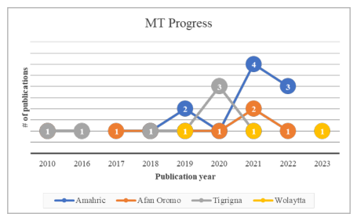
Figure 6: Progrès de MT par an
La figure 7 montre la disponibilité des ensembles de données par année de publication. On peut noter dans le tableau que dans les travaux récents, il y a des tentatives de rendre les ensembles de données disponibles pour les langues éthiopiennes, mais cela nécessite encore plus d'efforts.
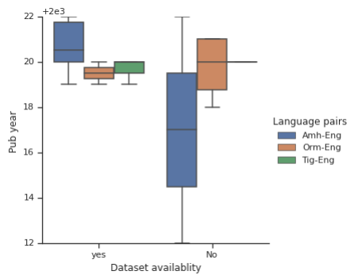
Figure 7: (MT=>English centeric) Disponibilité des ensembles de données par année de publication
La figure 8 montre les publications et les méthodologies utilisées. On peut voir sur la figure qu’avant 2021 la méthodologie dominante utilisée par différents chercheurs était la SMT, mais ces dernières années différents chercheurs ont appliqué une approche basée sur les réseaux de neurones même si ses performances dépendent de la disponibilité d’ensembles de données parallèles.
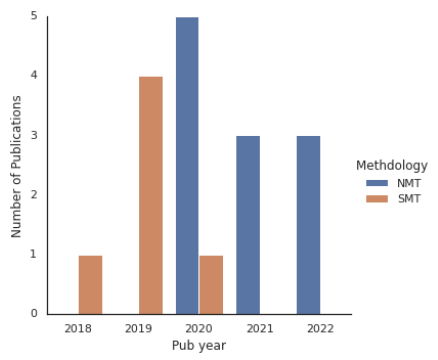
Figure 8 : (MT=>anglais centrique) Méthodologie par année de publication
English et Français
Natural Language Processing in Ethiopian Languages: Current State, Challenges, and Opportunities
Traitement du langage naturel dans les langues éthiopiennes : état actuel, défis et opportunités
Affiliations
Atnafu Lambebo Tonja 1,∗, Tadesse Destaw Belay2,∗, Israel Abebe Azime3,∗,
Abinew Ali Ayele4,5,∗, Moges Ahmed Mehamed6,∗, Olga Kolesnikova1, Seid Muhie Yimam5,∗,
∗EthioNLP, 1Instituto Politécnico Nacional, Mexico, 2Wollo University, Ethiopia,3 Saarland University, Germany,
4Bahir Dar University, Ethiopia,5Universität Hamburg, Germany, 6Wuhan University of Technology, China.
Affiliations
Atnafu Lambebo Tonja 1,∗, Tadesse Destaw Belay2,∗, Israel Abebe Azime3,∗,
Abinew Ali Ayele4,5,∗, Moges Ahmed Mehamed6,∗, Olga Kolesnikova1, Seid Muhie Yimam5,∗,
∗EthioNLP, 1Instituto Politécnico Nacional, Mexico, 2Wollo University, Ethiopia,3 Saarland University, Germany,
4Bahir Dar University, Ethiopia,5Universität Hamburg, Germany, 6Wuhan University of Technology, China.
Abstract
Résumé
This survey delves into the current state of natural language processing (NLP) for four Ethiopian languages: Amharic, Afaan Oromo, Tigrinya, and Wolaytta. Through this paper, we identify key challenges and opportunities for NLP research in Ethiopia. Furthermore, we provide a centralized repository on GitHub that contains publicly available resources for various NLP tasks in these languages. This repository can be updated periodically with contributions from other researchers. Our objective is to identify research gaps and disseminate the information to NLP researchers interested in Ethiopian languages and encourage future research in this domain.
Cette enquête se penche sur l’état actuel du traitement du langage naturel (NLP) pour quatre langues éthiopiennes : l’amharique, l’afaan oromo, le tigrinya et le wolaytta. Grâce à cet article, nous identifions les principaux défis et opportunités pour la recherche en TAL en Éthiopie. En outre, nous fournissons un référentiel centralisé sur GitHub qui contient des ressources accessibles au public pour diverses tâches NLP dans ces langues. Ce dépôt peut être mis à jour périodiquement avec les contributions d'autres chercheurs. Notre objectif est d'identifier les lacunes de la recherche et de diffuser ces informations aux chercheurs en TAL intéressés par les langues éthiopiennes et d'encourager les recherches futures dans ce domaine.
1 Introduction
1 Introduction
Due to the rise of its applications in many fields, Natural Language Processing (NLP), a sub-field of Artificial Intelligence (AI), is receiving a lot of attention in terms of research and development (Kalyanathaya et al., 2019). NLP tasks such as Machine Translation (MT), Sentiment or Opinion Analysis, Parts of Speech (POS) Tagging, Question Classification (QC) and Answering (QA), Chunking, Named Entity Recognition (NER), Emotion Detection, and Semantic Role Labeling is currently highly researched areas in different high-resource languages.
En raison de l’essor de ses applications dans de nombreux domaines, le traitement du langage naturel (NLP), un sous-domaine de l’intelligence artificielle (IA), reçoit beaucoup d’attention en termes de recherche et de développement (Kalyanathaya et al., 2019). Les tâches de TAL telles que la traduction automatique (TA), l'analyse de sentiments ou d'opinions, l'étiquetage des parties du discours (POS), la classification de questions (QC) et la réponse à des questions (QA), le chunking, la reconnaissance d'entités nommées (NER), la détection d'émotions et l'étiquetage des rôles sémantiques sont actuellement des domaines très étudiés dans différentes langues bien dotées.
Because of the advancement of deep learning and transformer approaches, modern NLP systems rely largely on the availability of vast volumes of annotated and unannotated data to function well. The majority of the languages in the world do not have access to such enormous information tools, despite the fact that a few high-resource languages have received more attention. Ethiopia is a country with more than 85 spoken languages, but only a few are presented in NLP progress. Figure 1 shows a search result for articles found in the ACL anthology for high and low-resource languages. As we can see from Figure 1, the search result for low-resource languages shows a very insignificant number of research works, while high-resource languages like English dominate in the ACL anthology paper repository. This might be a reflection of the unavailability of resources in the digital world, like in other high-resource languages, which affected the NLP progress in low-resource languages in general and Ethiopian languages in particular.
En raison de l'avancement de l'apprentissage profond et des approches de transformation, les systèmes NLP modernes dépendent largement de la disponibilité de vastes volumes de données annotées et non annotées pour bien fonctionner. La majorité des langues dans le monde n'ont pas accès à des outils d'information aussi énormes, malgré le fait que quelques langues à ressources élevées ont reçu plus d'attention. L’Éthiopie est un pays avec plus de 85 langues parlées, mais seules quelques-unes sont présentées dans les progrès du TNL. La figure 1 montre un résultat de recherche pour les articles trouvés dans l'anthologie ACL pour les langues à ressources élevées et faibles. Comme nous pouvons le voir à la figure 1, le résultat de la recherche pour les langues à faibles ressources montre un nombre très insignifiant de travaux de recherche, tandis que les langues à ressources élevées comme l’anglais dominent dans le référentiel d’articles d’anthologie de l’ACL. Cela pourrait être un reflet de l'indisponibilité des ressources dans le monde numérique, comme dans d'autres langues bien dotées, ce qui a affecté les progrès du TAL dans les langues peu dotées en général et les langues éthiopiennes en particulier.
Figure 1: ACL paper search results for high and low-resource languages.
Figure 1 : Résultats de recherche d'articles ACL pour les langues à ressources élevées et faibles.
In this paper, we overview research works done in the area of selected NLP tasks for four Ethiopian languages. We cover mainly the following 4 languages, namely Amharic (Amh), Afaan Oromo (Orm), Tigrinya (Tir), and Wolaytta (Wal). We also reviewed works on a small set of local languages including Awigna (Awn) and Kistane(Gru), specially for the machine translation tasks. The contributions of this paper are as follows: (1) Reporting the current state-of-the-art NLP research for Ethiopian languages. (2) Discussing NLP progress in Ethiopian languages and the main challenges and opportunities for Ethiopian NLP research. (3) Collecting and presenting publicly available resources for different NLP tasks in Ethiopian languages in one GitHub repository that can be extended periodically in collaboration with other researchers. The collected publicly available datasets and models for Ethiopian languages are in our GitHub repository.
Dans cet article, nous passons en revue les travaux de recherche effectués dans le domaine des tâches sélectionnées de TALN pour quatre langues éthiopiennes. Nous couvrons principalement les 4 langues suivantes, à savoir Amharic (Amh), Afaan Oromo (Orm), Tigrinya (Tir), et Wolaytta (Wal). Nous avons également passé en revue des travaux sur un petit ensemble de langues locales, y compris Awigna (Awn) et Kistane (Gru), spécialement pour les tâches de traduction automatique. Les contributions de cet article sont les suivantes : (1) Rendre compte de l'état de l'art actuel de la recherche en TAL pour les langues éthiopiennes. (2) Discuter des progrès du TAL dans les langues éthiopiennes et des principaux défis et opportunités pour la recherche en TAL éthiopien. (3) Collecter et présenter les ressources publiquement disponibles pour différentes tâches de TAL dans les langues éthiopiennes dans un seul dépôt GitHub qui peut être étendu périodiquement en collaboration avec d'autres chercheurs. Les ensembles de données et les modèles collectés et accessibles au public pour les langues éthiopiennes se trouvent dans notre dépôt GitHub.
2 Language Details
2 Détails linguistiques
This paper assesses the progress of NLP research for four Ethiopian languages: Amharic, Afaan Oromo, Tigrinya, and Wolaytta. As Ethiopia is a multilingual, multicultural, and multi-ethnic country, those selected languages have more speakers and native speakers in the country. Additionally, we have searched papers in the major eight Ethiopian languages and taken the top four based on frequency from the ACL anthology. This section gives some descriptions of those four targeted languages.
Cet article évalue les progrès de la recherche en TAL pour quatre langues éthiopiennes : l'amharique, l'afaan oromo, le tigrinya et le wolaytta. Comme l'Éthiopie est un pays multilingue, multiculturel et multiethnique, ces langues sélectionnées ont plus de locuteurs et de locuteurs natifs dans le pays. De plus, nous avons recherché des articles dans les huit principales langues éthiopiennes et pris les quatre premières en fonction de la fréquence dans l'anthologie ACL. Cette section donne quelques descriptions de ces quatre langues ciblées.
Amharic: is an Ethio-Semitic and Afro-Asiatic language. It is the official working language of the Federal Democratic Republic of Ethiopia (FDRE). It has about 57 million speakers, which makes it the second most spoken Semitic language in the world, where 32 million of them are native speakers (Eberhard et al., 2022). Other known names for this language are Amarigna and Amarinya.
Amharique : est une langue éthio-sémitique et afro-asiatique. C'est la langue de travail officielle de la République fédérale démocratique d'Éthiopie (FDRE). Elle compte environ 57 millions de locuteurs, ce qui en fait la deuxième langue sémitique la plus parlée au monde, dont 32 millions sont des locuteurs natifs (Eberhard et al., 2022). D'autres noms connus pour cette langue sont l'Amarigna et l'Amarinya.
Afaan Oromo: is a Cushitic language family. The language name may be written in different alternatives: (Afan, Afaan, affan) Oromo, or simply Oromo. There are over 50 million native Oromo speakers (Eberhard et al., 2022).
Afaan Oromo: est une langue de la famille des langues cushitiques. Le nom de la langue peut être écrit dans différentes alternatives: (Afan, Afaan, affan) Oromo, ou simplement Oromo. Il y a plus de 50 millions de locuteurs oromos natifs (Eberhard et al., 2022).
Tigrinya: (alternatively: Tigregna, Tigrinya or Tigrigna) is a Semitic language family spoken in the Tigray region of Ethiopia and in Eritrea. The language uses Ge'ez script with some additional alphabets that have been created for the Tigrinya language and are closely related to Ge'ez and Amharic. The language has around 9.9 million native speakers (Eberhard et al., 2022).
Tigrinya (ou Tigregna, Tigrinya ou Tigregna) est une famille de langues sémitiques parlée dans la région du Tigré en Éthiopie et en Érythrée. La langue utilise l'écriture Ge'ez avec quelques alphabets supplémentaires qui ont été créés pour la langue Tigrinya et sont étroitement liés au Ge'ez et à l'amharique. La langue compte environ 9,9 millions de locuteurs natifs (Eberhard et al., 2022).
Wolaytta: (alternatively: Wolayita, Wolaytegna, Wolaytigna, Welaitta, and Welayita) is an Omotic language family spoken in the Wolaytta zone of Ethiopia. Both Afan Oromo and Wolaytta are written in the Latin alphabet.
Wolaytta (ou Wolayita, Wolaytegna, Wolaytigna, Welaitta et Welayita) est une famille de langues omotiques parlée dans la zone de Wolaytta en Éthiopie. L'Afan Oromo et le Wolaytta s'écrivent tous deux en alphabet latin.
3 Low-resource Languages
3 Langues à faibles ressources
Researchers concerned with NLP have used data availability (either in the form of labeled, unlabeled, or auxiliary data) and NLP tools and resources as criteria for defining low-resource languages (Ranathunga et al., 2021). According to the work by Gereme et al. (2021), low-resource languages lack the tools and resources important for NLP and other techno-linguistic solutions. In addition, low-resource languages lack new language technology designs. Due to all these limitations, it is very difficult to develop new powerful methods for language applications (Tonja et al., 2023). For resource-rich languages such as English, Germany, French, Spanish and etc, the size of the dataset is not a problem because researchers have created a large set of corpora and tools for many NLP tasks. However, many other languages are deemed to be low-resource languages (Fesseha et al., 2021a). With this intuition, Ethiopian languages such as Amharic (Gereme et al., 2021), Afaan Oromo (Abate et al., 2019), Tigrinya (Osman and Mikami, 2012), Wolayitta (Tonja et al., 2023) are "low-resource" languages due to lack of data resources, linguistic materials, and tools. This affected the development of different NLP tasks and tools.
Les chercheurs s'intéressant au TAL ont utilisé la disponibilité des données (sous forme de données étiquetées, non étiquetées ou auxiliaires) et les outils et ressources de TAL comme critères pour définir les langues peu dotées (Ranathunga et al., 2021). Selon les travaux de Gereme et al. (2021), les langues peu dotées manquent d'outils et de ressources importants pour le TAL et d'autres solutions technolinguistiques. De plus, les langues peu dotées manquent de nouvelles conceptions de technologies du langage. En raison de toutes ces limitations, il est très difficile de développer de nouvelles méthodes puissantes pour les applications linguistiques (Tonja et al., 2023). Pour les langues riches en ressources telles que l'anglais, l'allemand, le français, l'espagnol, etc., la taille du jeu de données n'est pas un problème car les chercheurs ont créé un grand ensemble de corpus et d'outils pour de nombreuses tâches de TAL. Cependant, de nombreuses autres langues sont considérées comme des langues à faibles ressources (Fesseha et al., 2021a). Avec cette intuition, les langues éthiopiennes telles que l'amharique (Gereme et al., 2021), Afaan Oromo (Abate et al., 2019), Tigrinya (Osman et Mikami, 2012), Wolayitta (Tonja et al., 2023) sont des langues "à faibles ressources" en raison du manque de ressources de données, de matériaux linguistiques et d'outils. Cela a affecté le développement de différentes tâches et outils de TAL.
4 Possible Resource Sources and Tools
4 Sources de ressources et outils possibles
Data is one of the crucial building blocks for any NLP application. The availability of data is one of the criteria to categorize one language as a high or low-resource language (Ranathunga et al., 2021). As discussed in Section 3 Ethiopian languages belong to low-resource languages due to the unavailability of data. Table 1 shows some possible digital data sources for different NLP tasks.
Les données sont l'un des éléments essentiels de toute application NLP. La disponibilité des données est l'un des critères permettant de classer une langue comme langue à ressources élevées ou faibles (Ranathunga et al., 2021). Comme discuté dans la Section 3, les langues éthiopiennes appartiennent aux langues à faibles ressources en raison de l'indisponibilité des données. Le Tableau 1 montre quelques sources de données numériques possibles pour différentes tâches de TAL.
Like data, NLP tools are also one of the building blocks for NLP applications, and the unavailability of these tools for a certain language also directly affects the development of NLP applications for that language. Table 2 shows available NLP tools for Ethiopian languages. As it can be seen from Tables 1 and 2, there are still very few sources to gather digital data and tools, available for Ethiopian languages.
Comme les données, les outils de TAL sont également l'un des blocs de construction des applications de TAL, et l'indisponibilité de ces outils pour une certaine langue affecte également directement le développement des applications de TAL pour cette langue. Le tableau 2 montre les outils de TAL disponibles pour les langues éthiopiennes. Comme on peut le voir dans les tableaux 1 et 2, il y a encore très peu de sources pour recueillir des données numériques et des outils disponibles pour les langues éthiopiennes.
5 NLP Tasks and Their Progress
5 tâches NLP et leur progression
In this section, we discuss what work has been done, what datasets of what sizes were used, what methods or approaches the authors proposed, and the availability of their dataset and models for NLP tasks and their progress in selected Ethiopian languages. We focused on Machine Translation (MT), Part-of-speech (POS) tagging, Named Entity Recognition (NER), Question Classification (QC), Question Answering (QA), text classification, and text summarization tasks due to the large number of works done for the targeted low-resource languages. The available models, the datasets for the tasks, and their links are found in Table 7.
Dans cette section, nous discutons des travaux réalisés, des jeux de données de quelles tailles ont été utilisés, des méthodes ou approches que les auteurs ont proposées, ainsi que de la disponibilité de leurs jeux de données et modèles pour les tâches de traitement automatique des langues et de leurs progrès dans les langues éthiopiennes sélectionnées. Nous nous sommes concentrés sur les tâches de traduction automatique (TA), d'étiquetage de catégorie grammaticale (POS), de reconnaissance d'entités nommées (NER), de classification de questions (QC), de systèmes de questions-réponses (QA), de classification de textes et de résumé automatique en raison du grand nombre de travaux réalisés pour les langues peu dotées ciblées. Les modèles disponibles, les ensembles de données pour les tâches et leurs liens se trouvent dans le tableau 7.
5.1 POS Tagging
5.1 POS Tagging
POS tagging is one of the popular NLP tasks that refer to categorizing words in a text (corpus) in correspondence with a particular part of speech, depending on the definition of the word and its context (Pailai et al., 2013).
L'étiquetage POS est l'une des tâches populaires du TAL qui consiste à catégoriser les mots d'un texte (corpus) en correspondance avec une catégorie grammaticale particulière, selon la définition du mot et son contexte (Pailai et al., 2013).
Table 1: Possible data sources
Tableau 1: Sources de données possibles
Table 2: Available language tools that are developed for low-resource Ethiopian languages.
Tableau 2: Outils linguistiques disponibles qui sont développés pour les langues éthiopiennes à faibles ressources.
Table 3 summarizes the current state of POS tagging research for selected Ethiopian languages. The table shows the name(s) of the author(s), the size of the dataset, the method used, the accuracy score of the models, and the availability of datasets and models in public repositories.
Le tableau 3 résume l’état actuel de la recherche sur le marquage POS pour certaines langues éthiopiennes. Le tableau indique le(s) nom(s) de l'auteur (des auteurs), la taille de l'ensemble de données, la méthode utilisée, le score de précision des modèles et la disponibilité des ensembles de données et des modèles dans des dépôts publics.
For Amharic, seven studies are listed, which used different approaches such as Conditional Random Fields (CRF), Maximum Entropy (MaxEnt), Support Vector Machines (SVM), CRFSuit, and Memory-Based Tagger (MBT). The highest accuracy score was achieved using the CRFSuit approach by Gashaw and Shashirekha (2020). For Afaan Oromo, two studies are listed that used the Hidden Markov Model (HMM) and Brill's tagger. The highest accuracy score was achieved using Bill's tagger by Ayana (2015). For Tigrinya, two studies are listed that used CRF and Long Short-Term Memory (LSTM). The highest accuracy score was achieved by the LSTM approach in Tesfagergish and Kapociute-Dzikiene (2020) and for Wolayitta, one study is listed, that used HMM and achieved an accuracy score of 92.96.
Pour l'amharique, sept études sont répertoriées, qui ont utilisé différentes approches telles que les champs aléatoires conditionnels (CRF), l'entropie maximale (MaxEnt), les machines à vecteurs de support (SVM), CRFSuit et l'étiqueteur à base de mémoire (MBT). Le score de précision le plus élevé a été obtenu en utilisant l'approche CRFSuit par Gashaw et Shashirekha (2020). Pour Afaan Oromo, deux études sont répertoriées qui utilisaient le modèle de Markov caché (HMM) et le marqueur de Brill. Le score de précision le plus élevé a été obtenu en utilisant l'étiqueteur de Bill par Ayana (2015). Pour Tigrinya, deux études sont répertoriées qui ont utilisé le CRF et la mémoire à long terme (LSTM). Le score de précision le plus élevé a été obtenu par l'approche LSTM chez Tesfagergish et Kapocute-Dzikiene (2020) et pour Wolayitta, une étude est répertoriée, qui a utilisé HMM et a obtenu un score de précision de 92,96.
From Table 3, we can conclude that POS tagging is less researched for Ethiopian languages, the majority of the works were found for Amharic than for the other languages. From the works discussed in Table 3 only the work by Yimam et al. (2021) made their models and datasets available for public use.
D'après le Tableau 3, nous pouvons conclure que l'étiquetage morpho-syntaxique (POS) est moins étudié pour les langues éthiopiennes, la majorité des travaux ayant été réalisés pour l'amharique plutôt que pour les autres langues. Parmi les travaux discutés dans le Tableau 3, seul le travail de Yimam et al. (2021) a rendu leurs modèles et leurs jeux de données disponibles pour un usage public.
5.2 Named Entity Recognition (NER)
5.2 Reconnaissance d'entités nommées (NER)
In this section, we present works related to Named Entity Recognition (NER) for Ethiopian languages.
Dans cette section, nous présentons des travaux liés à la reconnaissance d'entités nommées (NER) pour les langues éthiopiennes.
For Amharic, Mehamed (2019) conducted the NER experiment on a corpus of 10,405 tokens using the CRF classifier. Alemu (2013) conducted the experiments on a manually developed corpus of 13,538 words with the Stanford tagging scheme. Tadele (2014) used a hybrid of machine learning (decision trees and support vector machines) and rule-based methods. The datasets for these works are not available. The work done by the Masakhane NLP group (Adelani et al., 2021) analyzed a 10 African languages dataset and conducted an extensive empirical evaluation of state-of-the-art methods across both supervised and transfer learning settings, including Amharic. The data and models are available on GitHub. Gambäck and Sikdar (2017); Yimam et al. (2021); Sikdar and Gambäck (2018) built a deep learning-based NER system for Amharic using the available SAY project NER dataset. Jibril and Tantğ (2022) proposed a transformer-based NER recognizer for Amharic using a new annotated 182,691 word dataset. All available NER datasets for Ethiopian languages are shown in Table 7.
Pour Amharic, Mehamed (2019) a mené l’expérience NER sur un corpus de 10 405 jetons en utilisant le classificateur CRF. Alemu (2013) a mené les expériences sur un corpus développé manuellement de 13 538 mots avec le schéma d'étiquetage de Stanford. Tadele (2014) a utilisé un hybride d'apprentissage automatique (arbres de décision et machines à vecteurs de support) et de méthodes basées sur des règles. Les ensembles de données pour ces œuvres ne sont pas disponibles. Le travail réalisé par le groupe Masakhane NLP (Adelani et al., 2021) a analysé un jeu de données de 10 langues africaines et a mené une évaluation empirique approfondie des méthodes de pointe dans les deux contextes d'apprentissage supervisé et par transfert, y compris l'amharique. Les données et les modèles sont disponibles sur GitHub. Gambäck et Sikdar (2017); Yimam et al. (2021); Sikdar et Gambäck (2018) ont construit un système NER basé sur l’apprentissage profond pour l’amharique en utilisant l’ensemble de données NER du projet SAY. Jibril et Tantğ (2022) ont proposé un système de reconnaissance NER basé sur un transformateur pour l’amharique en utilisant un nouvel ensemble de données annoté de 182 691 mots. Tous les ensembles de données NER disponibles pour les langues éthiopiennes sont présentés dans le tableau 7.
Table 3: Summary of related works for selected Ethiopian languages in POS tag tasks, Size shows the number of tokens used during the experiment, Score shows the outperformed model results evaluated using accuracy score, Dataset and Model shows the availability of dataset and models in publicly accessible repositories.
Tableau 3 : Résumé des travaux connexes pour certaines langues éthiopiennes dans les tâches d'étiquetage POS, Taille indique le nombre de tokens utilisés pendant l'expérience, Score indique les résultats du modèle le plus performant évalués à l'aide du score d'exactitude, Jeu de données et Modèle indiquent la disponibilité du jeu de données et des modèles dans des dépôts accessibles au public.
For Afan Oromo, the work by Legesse (2012) implemented the first NER system using a hybrid approach (rule-based and statistical) which contains 23k words. Abdi (2015) deals with NER in a hybrid (machine learning and rule-based) approach using the data from the work of Legesse (2012). Abafogi (2021) adopted boosting NER by combinations of such approaches as, machine learning, stored rules, and pattern matching using 44k words out of which around 7.8k were named entities. Gardie and Solomon (2022) developed a NER system using 12,479 data instances and BiLSTM, word embedding, and CNN approaches. However, none of the datasets in the above Afan Oromo works are publicly available.
Pour l’Afan Oromo, le travail de Legesse (2012) a mis en œuvre le premier système NER utilisant une approche hybride (basée sur des règles et statistique) qui contient 23k mots. Abdi (2015) traite de NER dans une approche hybride (apprentissage automatique et basée sur des règles) en utilisant les données des travaux de Legesse (2012). Abafogi (2021) a adopté le renforcement de la NER par des combinaisons d'approches telles que l'apprentissage automatique, les règles stockées et la correspondance de motifs en utilisant 44k mots, dont environ 7,8k étaient des entités nommées. Gardie et Solomon (2022) ont développé un système de NER en utilisant 12 479 instances de données et les approches BiLSTM, plongement lexical et CNN. Cependant, aucun des ensembles de données dans les œuvres ci-dessus d'Afan Oromo n'est accessible au public.
For Tigrinya, the research by Yohannes and Amagasa (2022b) proposed a method for NER using a pre-trained language model, TigRoBERTa. The dataset contains 69,309 manually annotated words. Later Yohannes and Amagasa (2022a) employed Tigrinya NER with an addition of 40,627 words.
Pour le tigrigna, la recherche de Yohannes et Amagasa (2022b) a proposé une méthode pour la reconnaissance d'entités nommées (NER) en utilisant un modèle de langage pré-entraîné, TigRoBERTa. Le jeu de données contient 69 309 mots annotés manuellement. Plus tard, Yohannes et Amagasa (2022a) employèrent Tigrinya NER avec un ajout de 40 627 mots.
The only NER work attempted Wolaytta Language was conducted by Biruk (2021) using a machine learning approach. Figures 2 and 3 show NER publication types and dataset availability for targeted Ethiopian languages, respectively. We can summarize that NER is a little more developed than the POS tagging for Afan Oromo, Tigriyna, and Wolaytta languages. However, like POS tagging, only small Amharic NER datasets shown in Figure 3 are available.
Le seul travail de reconnaissance d'entités nommées (NER) tenté sur la langue Wolaytta a été mené par Biruk (2021) en utilisant une approche d'apprentissage automatique. Les figures 2 et 3 montrent les types de publications NER et la disponibilité des ensembles de données pour les langues éthiopiennes ciblées, respectivement. Nous pouvons résumer que NER est un peu plus développé que le marquage POS pour les langues Afan Oromo, Tigriyna et Wolaytta. Cependant, comme pour le marquage POS, seuls les petits ensembles de données NER en amharique présentés à la figure 3 sont disponibles.
Figure 2: NER publication types for Ethiopian languages: the figure description is the same as in Figure 4. Wolaytta has no published works in conferences/journals.
Figure 2 : Types de publications NER pour les langues éthiopiennes : la description de la figure est la même que dans la Figure 4. Le wolaytta n'a pas de travaux publiés dans des conférences/revues.
Figure 3: NER dataset availability per language: as it can be seen relatively more NER datasets are available only for the Amharic language.
Figure 3: Disponibilité des ensembles de données NER par langue: comme on peut le voir, relativement plus d'ensembles de données NER sont disponibles uniquement pour la langue amharique.
5.3 Machine Translation (MT)
5.3 Traduction automatique (MT)
With the increasing popularity of computational tasks and the Internet's expanding reach to diverse, multilingual communities, the field of MT is rapidly progressing (Kenny, 2018). While impressive translation results have been achieved for language pairs with abundant resources, such as English-Spanish, English-French, English-Russian, and English-Portuguese, MT systems struggle in environments with limited resources, where insufficient training data for certain languages is the main obstacle. In this section, we discuss the MT progress for Ethiopian languages in three categories: (i) English Centericworks done for the above target Ethiopian languages with English pair, (ii) Ethiopian - Ethiopian - works done for Ethiopian language pairs without involving other languages, and (iii) Multilingual MT - works done for Ethiopian languages with other languages in a multilingual setting.
Avec la popularité croissante des tâches informatiques et l'extension de la portée d'Internet à diverses communautés multilingues, le domaine de la MT progresse rapidement (Kenny, 2018). Bien que des résultats de traduction impressionnants aient été obtenus pour des paires de langues disposant de ressources abondantes, telles que l'anglais-espagnol, l'anglais-français, l'anglais-russe et l'anglais-portugais, les systèmes de TA éprouvent des difficultés dans des environnements aux ressources limitées, où l'insuffisance des données d'apprentissage pour certaines langues est le principal obstacle. Dans cette section, nous discutons des progrès de MT pour les langues éthiopiennes dans trois catégories: i) Travaux centrés sur l'anglais effectués pour les langues éthiopiennes ciblées ci-dessus avec une paire anglaise, ii) Ethiopian-Ethiopian travaux réalisés pour des couples de langues éthiopiennes sans faire intervenir d'autres langues; et (iii) MT multilingue - travaux réalisés pour les langues éthiopiennes avec d'autres langues dans un cadre multilingue.
Table 4 summarizes several studies on MT in selected Ethiopian languages, focusing on the three categories. The studies vary in size of the parallel dataset, approach, score, availability of dataset, and model for public use. For English-centric language pairs, five studies used Amh-Eng language pairs. Biadgligne and Smaïli (2021) used NMT, and the size of their dataset was 231,898, while Gezmu et al. (2021) used NMT and had a dataset size of 145,364. Ashengo et al. (2021) used RNNMT, and their dataset size was 8,603. The study by Biadgligne and Smaïli (2022) used NMT, and their dataset size was the same as that of Biadgligne and Smaïli (2021). Belay et al. (2022a) used NMT with a dataset size of 1,140,130. Finally, four studies used language pairs: Orm-Eng, Tir-Eng, and Wol-Eng. These studies applied different approaches such as SMT, NMT, and hybrid, with dataset sizes ranging from 6,400 to 336,000.
Le tableau 4 résume plusieurs études sur la MT dans certaines langues éthiopiennes, en se concentrant sur les trois catégories. Les études varient en taille de l'ensemble de données parallèle, l'approche, le score, la disponibilité de l'ensemble de données et le modèle pour un usage public. Pour les paires de langues centrées sur l'anglais, cinq études ont utilisé des paires de langues Amh-Eng. Biadgligne et Smaïli (2021) ont utilisé la NMT, et la taille de leur ensemble de données était de 231 898, tandis que Gezmu et al (2021) ont utilisé la NMT et avaient une taille d’ensemble de données de 145 364. Ashengo et coll. (2021) ont utilisé RNNMT, et la taille de leur ensemble de données était de 8 603. L’étude de Biadgligne et Smaïli (2022) a utilisé la NMT, et leur taille d’ensemble de données était la même que celle de Biadgligne et Smaïli (2021). Belay et al. (2022a) ont utilisé NMT avec une taille de jeu de données de 1 140 130. Enfin, quatre études ont utilisé des paires de langues: Orm-Eng, Tir-Eng, et Wol-Eng. Ces études ont appliqué différentes approches telles que SMT, NMT et hybride, avec des tailles d'ensembles de données allant de 6 400 à 336 000.
Three studies used Amharic (Amh) and other local language pairs, with different approaches and parallel dataset sizes. The study by Mekonnen (2019) used Amh-Awn language pairs, with a parallel dataset size of 5,000 and an SMT approach, while the study by Woldeyohannis and Meshesha (2018) worked on Amh-Tir language pairs with a parallel dataset size of 27,000 and an SMT approach. Finally, the study by Ashengo et al. (2021) used Amh-Gur language pairs with a parallel dataset size of 9,225 and an NMT approach. The performance in these studies ranged from 7.73 to 17.26 in BLEU scores. For multilingual MT, we found two studies by Lakew et al. (2020) and Vegi et al. (2022) that included Ethiopian languages with other African languages.
Trois études ont utilisé l'amharique (Amh) et d'autres paires de langues locales, avec des approches différentes et des tailles d'ensembles de données parallèles. L’étude de Mekonnen (2019) a utilisé des paires de langues Amh-Awn, avec une taille d’ensemble de données parallèles de 5 000 et une approche SMT, tandis que l’étude de Woldeyohannis et Meshesha (2018) a travaillé sur des paires de langues Amh-Tir avec une taille d’ensemble de données parallèles de 27 000 et une approche SMT. Enfin, l’étude d’Ashengo et al. (2021) a utilisé des paires de langues Amh-Gur avec une taille d’ensemble de données parallèles de 9 225 et une approche NMT. La performance dans ces études variait de 7,73 à 17,26 dans les scores BLEU. Pour la MT multilingue, nous avons trouvé deux études de Lakew et al. (2020) et Vegi et al. (2022) qui incluaient les langues éthiopiennes avec d’autres langues africaines.
In Table 4, we can see some of the notable findings of the studies, for example, Solomon et al. (2017) achieved a high BLEU score of 47.00 with their SMT approach, although their parallel dataset size was small (6,400). The study by Berihu et al. (2020) used a hybrid approach and achieved a high BLEU score of 67.57 with a parallel dataset size of 32,000. Kidane et al. (2021) used NMT with a large parallel dataset size (336,000), but their BLEU score was relatively low (15.52). Tonja et al. (2021) and Tonja et al. (2023) used NMT for Wal-Eng language pairs, with parallel dataset sizes of 26,943, but their scores were relatively low (13.8 and 16.1, respectively). Lastly, in multilingual MT studies, the work by Lakew et al. (2020) made the datasets and models available for public use. More analysis of MT studies for the selected languages are discussed in Appendix A.
Dans le tableau 4, nous pouvons voir certaines des conclusions notables des études, par exemple, Solomon et coll. (2017) ont obtenu un score BLEU élevé de 47,00 avec leur approche SMT, bien que la taille de leur ensemble de données parallèles soit petite (6 400). L’étude de Berihu et coll. (2020) a utilisé une approche hybride et a obtenu un score BLEU élevé de 67,57 avec une taille d’ensemble de données parallèles de 32 000. Kidane et coll. (2021) ont utilisé la NMT avec un ensemble de données parallèles de grande taille (336 000), mais leur score BLEU était relativement faible (15,52). Tonja et coll. (2021) et Tonja et coll. (2023) ont utilisé la NMT pour les paires de langues Wal-Eng, avec des ensembles de données parallèles de 26 943, mais leurs scores étaient relativement faibles (13,8 et 16,1, respectivement). Enfin, dans les études de MT multilingues, le travail de Lakew et al. (2020) a rendu les jeux de données et les modèles disponibles pour un usage public. Une analyse plus approfondie des études de MT pour les langues sélectionnées est discutée en Annexe A.
5.4 Question Answering and Classification
5.4 Systèmes de questions-réponses et classification
Even though question classification (QC) and question answering (QA) have been largely studied for various languages, they have barely been studied for Amharic, Afaan Oromo, Tigrinya, and Wolaytta. Some of the QC and QA work conducted for these languages are discussed below.
Même si la classification de questions (QC) et les systèmes de questions-réponses (QA) ont été largement étudiés pour diverses langues, ils n'ont guère été étudiés pour l'amharique, l'afaan oromo, le tigrigna et le wolaytta. Certaines des recherches sur la QC et la QA menées pour ces langues sont discutées ci-dessous.
For Amharic, the work by Habtamu (2021) implemented a Convolutional Neural Network (CNN) based Amharic QC model using around 8k generic Amharic questions from different websites and labeled into 6 classes, similar to the question classes proposed by Li and Roth (2006). The work done by Taffa and Libsie (2019) developed Amharic non-factoid QA for biography, definition, and description questions. Yimam and Libsie (2009) developed an Amharic QA system for factoid questions. However, the datasets of the aforementioned works are still not available for further investigation. Nega et al. (2016) presented machine learning (SVM) based Amharic QC using a total of 180 questions collected from the Agriculture domain. Lastly, the work done by Belay et al. (2022b) built a QC dataset from a Telegram public channel called Ask Anything Ethiopia (https://t.me/askAnythingEthiopia) and developed deep learning-based Amharic question classifiers. Nega et al. (2016) and Belay et al. (2022b) datasets are released in a GitHub repository (see Table 7).
Pour l'amharique, le travail de Habtamu (2021) a implémenté un modèle de QC amharique basé sur un réseau de neurones convolutifs (CNN) en utilisant environ 8k questions amhariques génériques provenant de différents sites web et étiquetées en 6 classes, similaires aux classes de questions proposées par Li et Roth (2006). Le travail réalisé par Taffa et Libsie (2019) a développé une réponse aux questions non factuelles en amharique pour les questions de biographie, de définition et de description. Yimam et Libsie (2009) ont développé un système de questions-réponses amharique pour les questions factuelles. Cependant, les ensembles de données des travaux susmentionnés ne sont toujours pas disponibles pour une enquête plus approfondie. Nega et al. (2016) ont présenté un QC en amharique basé sur l’apprentissage automatique (SVM) à l’aide d’un total de 180 questions collectées dans le domaine de l’agriculture. Enfin, le travail réalisé par Belay et al. (2022b) a construit un ensemble de données de classification de questions à partir d'un canal public Telegram appelé Ask Anything Ethiopia (https://t.me/askAnythingEthiopia) et a développé des classificateurs de questions amhariques basés sur l'apprentissage profond. Les ensembles de données de Nega et coll. (2016) et de Belay et coll. (2022b) sont publiés dans un référentiel GitHub (voir le tableau 7).
For Afaan Oromo, the work by Chaltu (2016) proposed the Afaan Oromo list, definition, and description QA system. Daba (2021) improved the result of Chaltu (2016) work for Afaan Oromo non-factoid questions. AMARE (2016) conducted the Tigrinya factoid QA system using 1200 questions. No QC or QA works have been done previously for Wolaytta language. Figures 4 and 5 show QC/QA publication types and dataset availability for Ethiopian languages, respectively.
Pour Afaan Oromo, le travail de Chaltu (2016) a proposé la liste Afaan Oromo, la définition et le système d’assurance qualité de la description. Daba (2021) a amélioré le résultat du travail de Chaltu (2016) pour les questions non factuelles de l'Afaan Oromo. AMARE (2016) a réalisé le système de questions-réponses factuelles du Tigrinya en utilisant 1200 questions. Aucun travail de QC ou de QA n'a été effectué précédemment pour la langue Wolaytta. Les figures 4 et 5 montrent les types de publication QC/QA et la disponibilité des ensembles de données pour les langues éthiopiennes, respectivement.
Table 4: Summary of related works for selected Ethiopian languages in MT task, Lang. pairs is language pairs used for translation, Size shows the number of parallel sentences used in each paper, Score shows the outperformed model results evaluated using BLEU score, Dataset and Model shows the availability of dataset and models in publicly accessible repositories, respectively.
Tableau 4 : Résumé des travaux connexes pour les langues éthiopiennes sélectionnées dans la tâche de MT, Lang. pairs représente les paires de langues utilisées pour la traduction, Size indique le nombre de phrases parallèles utilisées dans chaque article, Score montre les résultats du modèle performant évalués à l'aide du score BLEU, Dataset et Model indiquent la disponibilité des jeux de données et des modèles dans des dépôts accessibles au public, respectivement.
Figure 4: QC/QA publication type: MSc/Ph.D. is an unpublished master or Ph.D. thesis uploaded in local universities repositories and archives. A Conference/Journal label is a work that is published in a conference or journal.
Figure 4 : Type de publication QC/QA : MSc/Ph.D. est une thèse de maîtrise ou de doctorat non publiée, téléversée dans des dépôts et archives d'universités locales. Une étiquette Conférence/Journal est un travail publié dans une conférence ou un journal.
From Table 4 and 5, we can conclude that QC and QA are less researched for Ethiopian languages, compared to the other NLP tasks. Most of the conducted works are unpublished MSc or Ph.D. theses. Relatively, Amharic has received more attention for QA and QC tasks.
D'après les tableaux 4 et 5, nous pouvons conclure que la QC et la QA sont moins étudiées pour les langues éthiopiennes, comparativement aux autres tâches de TAL. La plupart des travaux réalisés sont des thèses de MSc ou de Ph.D. non publiées. Relativement, l'amharique a reçu plus d'attention pour les tâches de QA et QC.
Figure 5: QA dataset availability per language: as it can be seen some QC datasets are available for Amharic but not for the other languages.
Figure 5 : Disponibilité des jeux de données QA par langue : comme on peut le voir, certains jeux de données QC sont disponibles pour l'amharique mais pas pour les autres langues.
5.5 Text Classification
5.5 Classification de texte
5.5.1 Hate Speech
5.5.1 Discours de haine
Despite many works conducted on hate speech detection for resource-rich languages, low-resource languages such as Amharic, Afan Oromo, Tigrinya, and Wolaytta, are less researched. Table 5 presents a summary of the related works in hate speech detection for selected Ethiopian languages. The table includes the name of the language, the author(s) of the paper, the size of the dataset used, the algorithm used, the score obtained, and the availability of the dataset and model in publicly accessible repositories.
Malgré de nombreux travaux menés sur la détection du discours de haine pour les langues riches en ressources, les langues à faibles ressources telles que l’amharique, l’afan oromo, le tigrinya et le wolaytta sont moins étudiées. Le tableau 5 présente un résumé des travaux connexes sur la détection du discours de haine pour certaines langues éthiopiennes. Le tableau inclut le nom de la langue, le(s) auteur(s) de l'article, la taille de l'ensemble de données utilisé, l'algorithme utilisé, le score obtenu, ainsi que la disponibilité de l'ensemble de données et du modèle dans des dépôts accessibles au public.
Table 5: Summary of related works for selected Ethiopian languages in hate speech tasks, Size shows the number of sentences used during the experiment, Score shows the outperformed model results evaluated using F1 score, Dataset and Model shows the availability of dataset and models in publicly accessible repositories, respectively.
Tableau 5: Résumé des travaux connexes pour les langues éthiopiennes sélectionnées dans les tâches de discours de haine, Taille montre le nombre de phrases utilisées pendant l'expérience, Score montre les résultats du modèle surperformé évalués à l'aide du score F1, Ensemble de données et Modèle montrent la disponibilité de l'ensemble de données et des modèles dans les référentiels accessibles au public, respectivement.
For Amharic, five studies were conducted with different approaches. Mossie and Wang (2018) used Word2Vec to detect hate speech in a dataset of 6,120 sentences and achieved an F1 score of 85.34. In another study, Mossie and Wang (2019) used CNN-GRU in a dataset of 14,266 sentences and achieved an F1 score of 97.85. Abebaw et al. (2022) used MC-CNN in a dataset of 2,000 sentences, achieving an F1 score of 74.50. Bawoke (2020) used BILSTM on a dataset of 30,000 sentences, achieving an F1 score of 90.00. Lastly, Ayele et al. (2022) used RoBERTa on a dataset of 5,267 sentences, achieving an F1 score of 50.00.
Pour l'amharique, cinq études ont été menées avec différentes approches. Mossie et Wang (2018) ont utilisé Word2Vec pour détecter le discours de haine dans un ensemble de données de 6 120 phrases et ont obtenu un score F1 de 85,34. Dans une autre étude, Mossie et Wang (2019) ont utilisé CNN-GRU dans un ensemble de données de 14 266 phrases et ont obtenu un score F1 de 97,85. Abebaw et al. (2022) ont utilisé MC-CNN dans un ensemble de données de 2 000 phrases, obtenant un score F1 de 74,50. Bawoke (2020) a utilisé BILSTM sur un ensemble de données de 30 000 phrases, obtenant un score F1 de 90.00. Enfin, Ayele et al. (2022) ont utilisé RoBERTa sur un ensemble de données de 5 267 phrases, obtenant un score F1 de 50,00.
For Afaan Oromo, three studies were conducted, and none of them made their dataset or model publicly accessible. Ababu and Woldeyohannis (2022) used BiLSTM on a dataset of 12,812 sentences, achieving an F1 score of 88.00. Defersha and Tune (2021) used L-SVM on a dataset of 13,600 sentences, achieving an F1 score of 63.00. Kanessa and Tulu (2021) used SVM+TFIDF on a dataset of 2,780 sentences, achieving an F1 score of 96.00. Bahre (2022) used NB+TF-IDF on a dataset of 7,793 sentences in the Tigrinya language and achieved an F1 score of 79.00. The dataset and model used in this study were not publicly accessible. In summary, Table 5 shows that hate speech detection in Ethiopian languages is one of the topics of research interest. However, similar to other tasks there is still a lack of publicly accessible datasets and models, which could hinder the development and evaluation of future research. It is worth noting that only two of the nine studies made their dataset and model publicly accessible. We can also see from Table 5 that for the Wolayitta language, there is no literature found for the hate speech task. Additionally, the F1 scores obtained vary greatly among the different studies, indicating that for all tasks the results are not comparable since the datasets are different.
Pour Afaan Oromo, trois études ont été menées, et aucune d’entre elles n’a rendu son ensemble de données ou son modèle accessible au public. Ababu et Woldeyohannis (2022) ont utilisé BiLSTM sur un ensemble de données de 12 812 phrases, obtenant un score F1 de 88,00. Defersha et Tune (2021) ont utilisé L-SVM sur un ensemble de données de 13 600 phrases, obtenant un score F1 de 63,00. Kanessa et Tulu (2021) ont utilisé SVM + TFIDF sur un ensemble de données de 2 780 phrases, obtenant un score F1 de 96,00. Bahre (2022) a utilisé NB+TF-IDF sur un jeu de données de 7 793 phrases en langue tigrinya et a obtenu un score F1 de 79,00. Le jeu de données et le modèle utilisés dans cette étude n'étaient pas accessibles au public. En résumé, le tableau 5 montre que la détection des discours de haine dans les langues éthiopiennes est l'un des sujets d'intérêt de recherche. Cependant, à l'instar d'autres tâches, il y a encore un manque d'ensembles de données et de modèles accessibles au public, ce qui pourrait entraver le développement et l'évaluation de la recherche future. Il convient de noter que seules deux des neuf études ont rendu leur ensemble de données et leur modèle accessibles au public. Nous pouvons également voir dans le tableau 5 que pour la langue Wolayitta, il n’y a pas de documentation trouvée pour la tâche sur le discours haineux. De plus, les scores F1 obtenus varient grandement entre les différentes études, ce qui indique que pour toutes les tâches les résultats ne sont pas comparables puisque les ensembles de données sont différents.
5.5.2 Sentiment Analysis
5.5.2 Analyse des sentiments
Table 6 summarizes recent studies on sentiment analysis tasks for selected Ethiopian languages, including Amharic, Afaan Oromo, and Tigrinya. The studies utilize various algorithms such as Role2Vec, Naïve Bayes, LSTM, SVM, hybrid, and XLNet. For Amharic, Yimam et al. (2020) achieved the highest F1 score of 58.48% using Role2Vec with a dataset and a model publicly available, while Abeje et al. (2022) achieved the highest accuracy of 90.10% using LSTM. For Afaan Oromo, the highest accuracy of 93.00% was achieved by Oljira (2020) using Naïve Bayes, while Rase (2020) achieved 87.70% accuracy using LSTM. In contrast, Wayessa and Abas (2020) achieved 90.00% accuracy using SVM. For Tigrinya, Tela (2020) achieved an F1 score of 81.62% using XLNet with a 4000 manually labeled dataset. For Wolaita, similar to the hate speech task, there is no literature found for the sentiment analysis task. None of the datasets and models for Afaan Oromo, Tigrinya, and most of the works for Amharic are publicly accessible, hence results are not also comparable. This suggests that more work needs to be done in creating publicly accessible datasets and models for sentiment analysis tasks in Ethiopian languages. In conclusion, the studies in Table 6 indicate the potential for sentiment analysis in Ethiopian languages. The results show that the models' performance varies depending on the algorithm, dataset, and model availability. Still, there is a need for further research to create publicly accessible datasets and models to improve the models' performance and make them available for use in different applications.
Le tableau 6 résume les études récentes sur les tâches d'analyse des sentiments pour les langues éthiopiennes sélectionnées, y compris l'amharique, l'afaan oromo et le tigrinya. Les études utilisent divers algorithmes tels que Role2Vec, Naïve Bayes, LSTM, SVM, hybride, et XLNet. Pour Amharic, Yimam et al. (2020) a obtenu le score F1 le plus élevé de 58,48 % en utilisant Role2Vec avec un ensemble de données et un modèle publiquement disponible, tandis que Abeje et al. (2022) a atteint la précision la plus élevée de 90,10 % en utilisant LSTM. Pour Afaan Oromo, la plus haute précision de 93,00 % a été atteinte par Oljira (2020) en utilisant Naïve Bayes, tandis que Rase (2020) a atteint une précision de 87,70 % en utilisant LSTM. En revanche, Wayessa et Abas (2020) ont obtenu une précision de 90,00 % en utilisant SVM. Pour le tigrigna, Tela (2020) a obtenu un score F1 de 81,62 % en utilisant XLNet avec un ensemble de données de 4000 étiquettes manuelles. Pour Wolaita, comme pour la tâche de discours de haine, il n'y a pas de littérature trouvée pour la tâche d'analyse des sentiments. Aucun des ensembles de données et des modèles pour Afaan Oromo, Tigrinya, et la plupart des œuvres pour Amharic ne sont accessibles au public, donc les résultats ne sont pas non plus comparables. Cela suggère que plus de travail doit être fait pour créer des ensembles de données et des modèles accessibles au public pour les tâches d'analyse des sentiments dans les langues éthiopiennes. En conclusion, les études du tableau 6 indiquent le potentiel de l'analyse des sentiments dans les langues éthiopiennes. Les résultats montrent que la performance des modèles varie en fonction de l'algorithme, de l'ensemble de données et de la disponibilité du modèle. Néanmoins, il est nécessaire de mener davantage de recherches pour créer des ensembles de données et des modèles accessibles au public afin d'améliorer la performance des modèles et de les rendre disponibles pour une utilisation dans différentes applications.
Table 6: Summary of related works for selected Ethiopian languages in sentiment analysis tasks, Size shows the annotated dataset used during the experiment, Score shows the outperformed model results evaluated using F1 score, Dataset and Model shows the availability of dataset and models in publicly accessible repositories, respectively.
Tableau 6 : Résumé des travaux connexes pour les langues éthiopiennes sélectionnées dans les tâches d'analyse des sentiments, Size indique la taille du jeu de données annoté utilisé lors de l'expérience, Score montre les résultats du modèle le mieux performant évalués à l'aide du score F1, Dataset et Model indiquent la disponibilité des jeux de données et des modèles dans des dépôts accessibles au public, respectivement.
5.5.3 News Classification and Text Summarization
5.5.3 Classification des nouvelles et résumé des textes
The development of an Amharic news text classification dataset is described in a publication by Azime and Mohammed (2021). The dataset consists of 50,000 sentences and is classified into six categories, including local news, sports, politics, international news, business, and entertainment. Fesseha et al. (2021b) created a Tigrigna text classification dataset with manual annotation, consisting of 30k news sentences categorized into six classes, including sport, agriculture, politics, religion, education, and health. To enhance their analysis, the authors investigated the use of various word embedding techniques such as CNN, bag of words, skip-gram, and fastText. The dataset used for these experiments was made publicly available, as shown in Table 7. The work by Megersa (2020) utilized a dataset collected from the Ethiopian News Agency to experiment with 8 and 20 classes, but unfortunately, both the model and datasets are not publicly available.
Le développement d'un ensemble de données de classification de textes d'actualités en amharique est décrit dans une publication d'Azime et Mohammed (2021). L'ensemble de données est constitué de 50 000 phrases et est classé en six catégories, notamment les actualités locales, le sport, la politique, les actualités internationales, les affaires et le divertissement. Fesseha et al. (2021b) ont créé un ensemble de données de classification de textes en tigrigna avec annotation manuelle, constitué de 30 000 phrases d'actualités catégorisées en six classes, notamment le sport, l'agriculture, la politique, la religion, l'éducation et la santé. Pour améliorer leur analyse, les auteurs ont étudié l'utilisation de diverses techniques de plongement lexical telles que CNN, le sac de mots, le skip-gram et fastText. L'ensemble de données utilisé pour ces expériences a été rendu public, comme le montre le tableau 7. Le travail de Megersa (2020) a utilisé un ensemble de données collecté auprès de l'Agence de presse éthiopienne pour expérimenter avec 8 et 20 classes, mais malheureusement, le modèle et les ensembles de données ne sont pas disponibles publiquement.
Hasan et al. (2021) created an abstractive summarization dataset for 44 different languages using BBC articles collected via crawling. The resulting dataset comprises 5461 Amharic, 4827 Tigrinya, and 5,738 Afaan Oromo samples, which can potentially be employed for various Ethiopian language-related tasks. The authors fine-tuned mt5 models using this dataset and subsequently reported the outcomes. All publicly available data and code are listed in Table 7 for exploration. In general, news classification and text summarization has not yet been properly researched for Ethiopian languages.
Hasan et al. (2021) ont créé un jeu de données de résumé automatique abstractif pour 44 langues différentes en utilisant des articles de la BBC collectés par exploration systématique. Le jeu de données résultant comprend 5461 échantillons en amharique, 4827 en tigrigna et 5738 en afaan oromo, qui peuvent potentiellement être utilisés pour diverses tâches liées aux langues éthiopiennes. Les auteurs ont affiné les modèles mt5 en utilisant cet ensemble de données et ont ensuite rapporté les résultats. Toutes les données et codes disponibles publiquement sont listés dans le Tableau 7 pour exploration. En général, la classification des nouvelles et la synthèse des textes n'ont pas encore été correctement étudiées pour les langues éthiopiennes.
6 Summary of Challenges, Opportunities and Future Directions
6 Résumé des défis, des possibilités et des orientations futures
Challenges: Based on the findings of the above studies, we identified the following challenges: (i) A scarcity of publicly available data for Ethiopian languages. As the data and resources are not mostly publicly available, researchers are going to "reinventing the wheel" by trying to address the problem. This leaves the low-resource language research usually 'in limbo', as it is not clear if the problem is addressed or not. This further makes it difficult to train different NLP tasks for Ethiopian languages and limits the scope of NLP applications. Moreover, it is very difficult to reproduce results since the benchmark datasets are not maintained. (ii) A lack of resources, tools, and infrastructure for NLP research in low-resource Ethiopian languages, can make it difficult to attract funding and talented researchers to work on the problem. (iii) Few people are interested in NLP for low-resource Ethiopian languages. This can make it difficult to attract resources and support for NLP research in these languages.
Défis : Sur la base des résultats des études ci-dessus, nous avons identifié les défis suivants : (i) Une rareté de données publiquement disponibles pour les langues éthiopiennes. Comme les données et les ressources ne sont pas majoritairement publiquement disponibles, les chercheurs vont "réinventer la roue" en essayant de résoudre le problème. Cela laisse la recherche sur les langues à faibles ressources habituellement « dans les limbes », car il n'est pas clair si le problème est abordé ou non. Cela rend en outre difficile l'entraînement de différentes tâches de TAL pour les langues éthiopiennes et limite la portée des applications de TAL. De plus, il est très difficile de reproduire les résultats puisque les ensembles de données de référence ne sont pas conservés. (ii) Un manque de ressources, d'outils et d'infrastructures pour la recherche en TAL dans les langues éthiopiennes à faibles ressources peut rendre difficile l'attraction de financements et de chercheurs talentueux pour travailler sur le problème. (iii) Peu de personnes s'intéressent au TAL pour les langues éthiopiennes à faibles ressources. Cela peut rendre difficile l'attraction de ressources et de soutien pour la recherche en TAL dans ces langues.
Opportunities: Here are some suggestions and ideas for the future that will help get more Ethiopian languages into NLP research: (i) There needs to be more work done to collect and label data in Ethiopian languages. This will require collaboration between linguists, NLP experts, and native speakers of the languages. (ii) As the results of the addressed NLP tasks are not comparable since the datasets are different, one big issue to address in the future is the release of benchmark datasets on which researchers can work on improving performance and developing new approaches. This will require sustained funding and collaboration among researchers. (iii) The development of machine translation systems for low-resource Ethiopian languages can help bridge the language gap and enable communication across different languages. (iv) Transfer learning techniques can be used to leverage pre-trained models in high-resource languages to improve the performance of models in low-resource languages. (v) The involvement of local communities and stakeholders is critical for the success of NLP research in low-resource Ethiopian languages. People in the community can give researchers and developers important information about the language and culture.
Opportunités: Voici quelques suggestions et idées pour l'avenir qui aideront à obtenir plus de langues éthiopiennes dans la recherche NLP: (i) Il est nécessaire de faire plus de travail pour collecter et étiqueter des données dans les langues éthiopiennes. Cela nécessitera une collaboration entre linguistes, experts en TAL et locuteurs natifs des langues. (ii) Comme les résultats des tâches de TAL abordées ne sont pas comparables puisque les jeux de données sont différents, un enjeu majeur à traiter à l'avenir est la publication de jeux de données de banc d'essai sur lesquels les chercheurs peuvent travailler pour améliorer les performances et développer de nouvelles approches. Cela nécessitera un financement et une collaboration soutenus entre les chercheurs. iii) La mise au point de systèmes de traduction automatique pour les langues éthiopiennes à faibles ressources peut contribuer à combler le fossé linguistique et permettre la communication entre les différentes langues. (iv) Les techniques d'apprentissage par transfert peuvent être utilisées pour exploiter des modèles pré-entraînés dans des langues bien dotées en ressources afin d'améliorer les performances des modèles dans des langues peu dotées en ressources. (v) La participation des communautés locales et des parties prenantes est cruciale pour le succès de la recherche en TAL sur les langues éthiopiennes peu dotées en ressources. Les personnes de la communauté peuvent fournir aux chercheurs et aux développeurs des informations importantes sur la langue et la culture.
Table 7: Available datasets for Ethiopian languages.
Tableau 7 : Ensembles de données disponibles pour les langues éthiopiennes.
Impact of this work and future directions: The results of this survey could be used to support future research initiatives in the field of NLP in Ethiopian Languages. Researchers can use the findings of the survey to identify areas that require further investigation and to develop research proposals that address the challenges and opportunities identified in the survey. This work also helps to conduct more surveys and develop a low-resource language demarcation. The demarcation helps to identify languages that need more NLP research attention. Adding more Ethiopian languages to NLP research will require researchers, linguists, and native speakers of the languages to work together, hence, at some point, these languages will be not considered low-resource languages anymore. Moreover, we point out with caution that not all the gaps and challenging problems can be instantly and readily fixed by researchers and research teams alone. Some of these problems call for sustained community cooperation as well as significant research funding from academic funding organizations. The difficulties we discussed in this paper are based on what we have learned from published research work and a quick scan of available corpora. Further studies with more comprehensive analysis, such as questionnaires directed to resource authors and users, or a more systematic inspection of the available data, can provide a deeper understanding of the causes of these problems and suggest effective solutions.
Impact de ce travail et perspectives d'avenir : Les résultats de cette enquête pourraient être utilisés pour soutenir les initiatives de recherche futures dans le domaine du TAL des langues éthiopiennes. Les chercheurs peuvent utiliser les résultats de l'enquête pour identifier les domaines nécessitant des investigations plus approfondies et pour développer des propositions de recherche qui abordent les défis et les opportunités identifiés dans l'enquête. Ce travail aide également à mener plus de relevés et à élaborer une démarcation des langues à faibles ressources. La démarcation aide à identifier les langues qui ont besoin de plus d'attention de la recherche NLP. L'ajout de plus de langues éthiopiennes à la recherche en TAL nécessitera la collaboration des chercheurs, des linguistes et des locuteurs natifs de ces langues ; par conséquent, à un moment donné, ces langues ne seront plus considérées comme des langues à ressources limitées. De plus, nous soulignons avec prudence que toutes les lacunes et les problèmes difficiles ne peuvent pas être résolus instantanément et facilement par les chercheurs et les équipes de recherche seuls. Certains de ces problèmes nécessitent une coopération communautaire soutenue ainsi qu'un financement de la recherche significatif de la part des organisations de financement académique. Les difficultés que nous avons discutées dans cet article sont basées sur ce que nous avons appris des travaux de recherche publiés et un rapide examen des corpus disponibles. Des études supplémentaires avec une analyse plus complète, telles que des questionnaires adressés aux auteurs et utilisateurs de ressources, ou une inspection plus systématique des données disponibles, peuvent fournir une compréhension plus approfondie des causes de ces problèmes et suggérer des solutions efficaces.
7 Conclusion
7 Conclusion
In this work, we investigated the most common NLP tasks and research works carried out in four Ethiopian languages. We explored the main NLP research directions, progress, challenges, and opportunities for Ethiopian languages. Our findings revealed that a significant amount of research has been centered on English or Amharic-centric machine translation tasks. Despite there being a plethora of written languages in Ethiopia, only a few of them have been explored in common research studies. Additionally, we observed a low prevalence of valuable resource publications in international conference venues. The majority of works are master's theses. The publicly available datasets, models, and tools are released in a centralized GitHub repository. In the future, we plan to conduct a survey on more African languages and try to come up with an NLP resource demarcation line that could help funders to prioritize research topics and languages.
Dans ce travail, nous avons étudié les tâches de TAL les plus courantes et les travaux de recherche menés dans quatre langues éthiopiennes. Nous avons exploré les principales directions de la recherche en TAL, les progrès, les défis et les opportunités pour les langues éthiopiennes. Nos résultats ont révélé qu'une quantité importante de recherches a été centrée sur les tâches de traduction automatique centrées sur l'anglais ou l'amharique. Malgré la présence de nombreuses langues écrites en Éthiopie, seulement quelques-unes d'entre elles ont été explorées dans des études de recherche courantes. En outre, nous avons observé une faible prévalence de publications de ressources précieuses dans les lieux de conférence internationaux. La majorité des travaux sont des mémoires de master. Les ensembles de données, modèles et outils accessibles au public sont publiés dans un référentiel GitHub centralisé. À l'avenir, nous prévoyons de mener une enquête sur davantage de langues africaines et d'essayer de proposer une ligne de démarcation des ressources en TAL qui pourrait aider les bailleurs de fonds à prioriser les sujets de recherche et les langues.
Notes
Notes
1 Link to the survey GitHub repository https://github.com/EthioNLP/Ethiopian-Language-Survey
1 Lien vers le dépôt GitHub de l'enquête https://github.com/EthioNLP/Ethiopian-Language-Survey
2 Link to the survey GitHub repository https://github.com/EthioNLP/Ethiopian-Language-Survey
2 Lien vers le dépôt GitHub de l'enquête https://github.com/EthioNLP/Ethiopian-Language-Survey
References
Références
Teshome Mulugeta Ababu and Michael Melese Woldeyohannis. 2022. Afaan oromo hate speech detection and classification on social media. In Proceedings of the Thirteenth Language Resources and Evaluation Conference, pages 6612-6619.
Abdo Ababor Abafogi. 2021. Boosting afaan oromo named entity recognition with multiple methods. International Journal of Information Engineering and Electronic Business (IJIEEB), 13(5):51-59.
Solomon Teferra Abate, Michael Melese, Martha Yifiru Tachbelie, Million Meshesha, Solomon Atinafu, Wondwossen Mulugeta, Yaregal Assabie, Hafte Abera, Biniyam Ephrem, Tewodros Gebreselassie, et al. 2019. English-ethiopian languages statistical machine translation. In Proceedings of the 2019 Workshop on Widening NLP, pages 27-30.
Sani Genemo Abdi. 2015. Afaan Oromo Named Entity Recognition Using Hybrid Approach. Unpublished master thesis, Addis Ababa University.
Zeleke Abebaw, Andreas Rauber, and Solomon Atnafu. 2022. Multi-channel convolutional neural network for hate speech detection in social media. In Advances of Science and Technology: 9th EAI International Conference, ICAST 2021, Hybrid Event, Bahir Dar, Ethiopia, August 27-29, 2021, Proceedings, Part I, pages 603-618. Springer.
Bekalu Tadele Abeje, Ayodeji Olalekan Salau, Habtamu Abate Ebabu, and Aleka Melese Ayalew. 2022. Comparative analysis of deep learning models for aspect level amharic news sentiment analysis. In 2022 International Conference on Decision Aid Sciences and Applications (DASA), pages 1628-1633. IEEE.
Sisay Fissaha Adafre. 2005. Part of speech tagging for amharic using conditional random fields. In Proceedings of the ACL workshop on computational approaches to semitic languages, pages 47-54.
David Ifeoluwa Adelani, Jade Abbott, Graham Neubig, Daniel D'souza, Julia Kreutzer, Constantine Lignos, Chester Palen-Michel, Happy Buzaaba, Shruti Rijhwani, Sebastian Ruder, Stephen Mayhew, Israel Abebe Azime, Shamsuddeen H. Muhammad, Chris Chinenye Emezue, Joyce Nakatumba-Nabende, Perez Ogayo, Aremu Anuoluwapo, Catherine Gitau, Derguene Mbaye, Jesujoba Alabi, Seid Muhie Yimam, Tajuddeen Rabiu Gwadabe, Ignatius Ezeani, Rubungo Andre Niyongabo, Jonathan Mukiibi, Verrah Otiende, Iroro Orife, Davis David, Samba Ngom, Tosin Adewumi, Paul Rayson, Mofetoluwa Adeyemi, Gerald Muriuki, Emmanuel Anebi, Chiamaka Chukwuneke, Nkiruka Odu, Eric Peter Wairagala, Samuel Oyerinde, Clemencia Siro, Tobius Saul Bateesa, Temilola Oloyede, Yvonne Wambui, Victor Akinode, Deborah Nabagereka, Maurice Katusiime, Ayodele Awokoya, Mouhamadane MBOUP, Dibora Gebreyohannes, Henok Tilaye, Kelechi Nwaike, Degaga Wolde, Abdoulaye Faye, Blessing Sibanda, Orevaoghene Ahia, Bonaventure F. P. Dossou, Kelechi Ogueji, Thierno Ibrahima DIOP, Abdoulaye Diallo, Adewale Akinfaderin, Tendai Marengereke, and Salomey Osei. 2021. MasakhaNER: Named Entity Recognition for African Languages. Transactions of the Association for Computational Linguistics, 9:1116-1131.
Sisay Adugna and Andreas Eisele. 2010. English-oromo machine translation: An experiment using a statistical approach. In Proceedings of the Seventh International Conference on Language Resources and Evaluation (LREC'10).
Girma Neshir Alemneh, Andreas Rauber, and Solomon Atnafu. 2020. Negation handling for amharic sentiment classification. In Proceedings of the The Fourth Widening Natural Language Processing Workshop, pages 4-6.
Besufikad Alemu. 2013. A named entity recognition for Amharic. Unpublished master thesis, Addis Ababa University.
KIBROM HAFTU AMARE. 2016. TIGRIGNA QUESTION ANSWERING SYSTEM FOR FACTOID QUESTIONS. Unpublished master thesis, Addis Ababa University.
Yeabsira Asefa Ashengo, Rosa Tsegaye Aga, and Surafel Lemma Abebe. 2021. Context based machine translation with recurrent neural network for english-amharic translation. Machine Translation, 35(1):19-36.
Abraham Gizaw Ayana. 2015. Towards improving brill's tagger lexical and transformation rule for afaan oromo language. Department of Geographic Information Science, Hawassa Universty, Hawassa.
Abinew Ali Ayele, Skadi Dinter, Tadesse Destaw Belay, Tesfa Tegegne Asfaw, Seid Muhie Yimam, and Chris Biemann. 2022. The 5js in ethiopia: Amharic hate speech data annotation using toloka crowdsourcing platform. In 2022 International Conference on Information and Communication Technology for Development for Africa (ICT4DA), pages 114-120. IEEE.
M Azath and Tsegay Kiros. 2020. Statistical machine translator for english to tigrigna translation. Int. J. Sci. Technol. Res, 9(1):2095-2099.
Israel Abebe Azime and Nebil Mohammed. 2021. An amharic news text classification dataset. CoRR, abs/2103.05639.
Weldemariam Bahre. 2022. Hate Speech Detection from Facebook Social Media Posts and Comments in Tigrigna language. Ph.D. thesis, St. Mary's University.
Emuye Bawoke. 2020. Amharic text hate speech detection in social media using deep learning approach. Ph.D. thesis.
Tadesse Destaw Belay, Atnafu Lambebo Tonja, Olga Kolesnikova, Seid Muhie Yimam, Abinew Ali Ayele, Silesh Bogale Haile, Grigori Sidorov, and Alexander Gelbukh. 2022a. The effect of normalization for bi-directional amharic-english neural machine translation. In 2022 International Conference on Information and Communication Technology for Development for Africa (ICT4DA), pages 84-89. IEEE.
Tadesse Destaw Belay, Seid Muhie Yimam, Abinew Ayele, and Chris Biemann. 2022b. Question answering classification for Amharic social media community based questions. In Proceedings of the 1st Annual Meeting of the ELRA/ISCA Special Interest Group on Under-Resourced Languages, pages 137-145, Marseille, France. European Language Resources Association.
Zemicheal Berihu, Gebremariam Mesfin Assres, Mulugeta Atsbaha, and Tor-Morten Grønli. 2020. Enhancing bi-directional english-tigrigna machine translation using hybrid approach. In Norsk IKT-konferanse for forskning og utdanning, 1.
Yohanens Biadgligne and Kamel Smaïli. 2021. Parallel corpora preparation for english-amharic machine translation. In Advances in Computational Intelligence: 16th International Work-Conference on Artificial Neural Networks, IWANN 2021, Virtual Event, June 16-18, 2021, Proceedings, Part I 16, pages 443-455. Springer.
Yohannes Biadgligne and Kamel Smaïli. 2022. Offline corpus augmentation for english-amharic machine translation. In 2022 5th International Conference on Information and Computer Technologies (ICICT), pages 128-135. IEEE.
Sidamo Biruk. 2021. Named Entity Recognition for Wolaytta Language Using Machine Learning Approach. Unpublished master thesis, Adama Science and Technology University.
Sisay Chala, Bekele Debisa, Amante Diriba, Silas Getachew, Chala Getu, and Solomon Shiferaw. 2021. Crowdsourcing parallel corpus for english-oromo neural machine translation using community engagement platform. arXiv preprint arXiv:2102.07539.
Fita Elanso Chaltu. 2016. Afaan Oromo List, Definition and Description Question Answering System. Unpublished master thesis, Addis Ababa University.
Endale Daba. 2021. Improving Afaan Oromo question answering system: definition, list and description question types for non-factoid questions. Unpublished master thesis, St. Mary's University.
NB Defersha and KK Tune. 2021. Detection of hate speech text in afan oromo social media using machine learning approach. Indian J Sci Technol, 14(31):2567-78.
David M. Eberhard, Gary F. Simons, and Charles D. Fennig. 2022. Ethnologue: Languages of the World. Twenty-fifth edition. Dallas, Texas: SIL International. Url: http://www.ethnologue.com.
Awet Fesseha, Shengwu Xiong, Eshete Derb Emiru, Moussa Diallo, and Abdelghani Dahou. 2021a. Text classification based on convolutional neural networks and word embedding for low-resource languages: Tigrinya. Information, 12(2):52.
Awet Fesseha, Shengwu Xiong, Eshete Derb Emiru, Moussa Diallo, and Abdelghani Dahou. 2021b. Text classification based on convolutional neural networks and word embedding for low-resource languages: Tigrinya. Information, 12(2).
Björn Gambäck, Fredrik Olsson, Atelach Alemu Argaw, and Lars Asker. 2009. Methods for amharic part-of-speech tagging. In First Workshop on Language Technologies for African Languages, March 2009, Athens, Greece.
Björn Gambäck and Utpal Kumar Sikdar. 2017. Named entity recognition for amharic using deep learning. In 2017 IST-Africa Week Conference (IST-Africa), pages 1-8. IEEE.
B Gardie and Z Solomon. 2022. Afan-oromo named entity recognition using bidirectional rnn. Indian Journal of Science and Technology, 15(16):736-741.
Ibrahim Gashaw and H L Shashirekha. 2020. Machine learning approaches for amharic parts-of-speech tagging. arXiv preprint arXiv:2001.03324.
Michael Gasser. 2011. Hornmorpho: a system for morphological processing of amharic, oromo, and tigrinya. In Conference on Human Language Technology for Development, Alexandria, Egypt, pages 94-99.
Binyam Gebrekidan Gebre. 2010. Part of speech tagging for Amharic. Ph.D. thesis, University of Wolverhampton Wolverhampton.
Ebisa A Gemechu and GR Kanagachidambaresan. 2021. Machine learning approach to english-afaan oromo text-text translation: Using attention based neural machine translation. In 2021 4th International Conference on Computing and Communications Technologies (ICCCT), pages 80-85. IEEE.
Fantahun Gereme, William Zhu, Tewodros Ayall, and Dagmawi Alemu. 2021. Combating fake news in "low-resource" languages: Amharic fake news detection accompanied by resource crafting. Information, 12(1):20.
Andargachew Mekonnen Gezmu, Andreas Nürnberger, and Tesfaye Bayu Bati. 2021. Extended parallel corpus for amharic-english machine translation. arXiv preprint arXiv:2104.03543.
Saron Habtamu. 2021. Amharic Question Classification System Using Deep Learning Approach. Unpublished master thesis, Addis Ababa University.
Tahmid Hasan, Abhik Bhattacharjee, Md Saiful Islam, Kazi Samin, Yuan-Fang Li, Yong-Bin Kang, M. Sohel Rahman, and Rifat Shahriyar. 2021. Xl-sum: Large-scale multilingual abstractive summarization for 44 languages. CoRR, abs/2106.13822.
SINTAYEHU HIRPSSA and GS Lehal. 2020. Pos tagging for amharic text: A machine learning approach. INFOCOMP: Journal of Computer Science, 19(1).
Ebrahim Chekol Jibril and A Cüneyd Tantğ. 2022. Anec: An amharic named entity corpus and transformer based recognizer. arXiv preprint arXiv:2207.00785.
Krishna Prakash Kalyanathaya, D Akila, and P Rajesh. 2019. Advances in natural language processing-a survey of current research trends, development tools and industry applications. International Journal of Recent Technology and Engineering, 7(5C):199-202.
Lata Guta Kanessa and Solomon Gizaw Tulu. 2021. Automatic hate and offensive speech detection framework from social media: the case of afaan oromoo language. In 2021 International Conference on Information and Communication Technology for Development for Africa (ICT4DA), pages 42-47. IEEE.
Dorothy Kenny. 2018. Machine translation. In The Routledge handbook of translation and philosophy, pages 428-445. Routledge.
Lidia Kidane, Sachin Kumar, and Yulia Tsvetkov. 2021. An exploration of data augmentation techniques for improving english to tigrinya translation. arXiv preprint arXiv:2103.16789.
Surafel M Lakew, Matteo Negri, and Marco Turchi. 2020. Low resource neural machine translation: A benchmark for five african languages. arXiv preprint arXiv:2003.14402.
Mandefro Legesse. 2012. Named Entity Recognition for Afan Oromo. Unpublished master thesis, Addis Ababa University.
Xin Li and Dan Roth. 2006. Learning question classifiers: the role of semantic information. Natural Language Engineering, 12(3):229-249.
Fanta Teferi Megersa. 2020. Hierarchical afaan oromoo news text classification.
Moges Ahmed Mehamed. 2019. Named entity recognition for Amharic language. LAP LAMBERT Academic Publishing.
Habtamu Mekonnen. 2019. Amharic-awngi machine translation: An experiment using statistical approach. International Journal of Computer Sciences and Engineering, 7:6-10.
Million Meshesha and Yitayew Solomon. 2018. English-afaan oromo statistical machine translation. International Journal of Computational Linguistic (IJCL), 9(1).
Samuel Minale. 2022. Amharic social media dataset for hate speech detection and classification in amharic text with deep learning.
Zewdie Mossie and Jenq-Haur Wang. 2018. Social network hate speech detection for amharic language. Computer Science & Information Technology, page 41.
Zewdie Mossie and Jenq-Haur Wang. 2019. Vulnerable community identification using hate speech detection on social media. Information Processing & Management, page 102087.
Adane Nega, Workneh Chekol, and Alemu Kumlachew. 2016. Question classification in amharic question answering system: Machine learning approach. International Journal of Advanced Studies in Computers, Science and Engineering, 5(10):14-21.
Megersa Oljira. 2020. Sentiment analysis of afaan oromo using machine learning approach. International Journal of Research Studies in Science, Engineering and Technology, 7(9):7-15.
Omer Osman and Yoshiki Mikami. 2012. Stemming tigrinya words for information retrieval. In Proceedings of COLING 2012: Demonstration Papers, pages 345-352.
Jaruwat Pailai, Rachada Kongkachandra, Thepchai Supnithi, and Prachya Boonkwan. 2013. A comparative study on different techniques for thai part-of-speech tagging. In 2013 10th International Conference on Electrical Engineering/Electronics, Computer, Telecommunications and Information Technology, pages 1-5. IEEE.
Wondwossen Philemon and Wondwossen Mulugeta. 2014. A machine learning approach to multi-scale sentiment analysis of amharic online posts. HiLCoE Journal of Computer Science and Technology, 2(2):8.
Surangika Ranathunga, En-Shiun Annie Lee, Marjana Prifti Skenduli, Ravi Shekhar, Mehreen Alam, and Rishemjit Kaur. 2021. Neural machine translation for low-resource languages: A survey. ACM Computing Surveys.
Megersa Oljira Rase. 2020. Sentiment analysis of afaan oromoo facebook media using deep learning approach. New Media and Mass Communication, 90(2020):2224-3267.
Binyam Ephrem Seyoum, Yusuke Miyao, and Baye Yimam Mekonnen. 2018. Universal dependencies for amharic. In Proceedings of the Eleventh International Conference on Language Resources and Evaluation (LREC 2018).
Birhanesh Fikre Shirko. 2020. Part of speech tagging for wolaita language using transformation based learning (tbl) approach.
Utpal Kumar Sikdar and Björn Gambäck. 2018. Named entity recognition for amharic using stack-based deep learning. In Computational Linguistics and Intelligent Text Processing: 18th International Conference, CICLing 2017, Budapest, Hungary, April 17-23, 2017, Revised Selected Papers, Part I 18, pages 276-287. Springer.
Yitayew Solomon, Million Meshesha, and Wendewesen Endale. 2017. Optimal alignment for bi-directional afaan oromo-english statistical machine translation. vol, 3:73-77.
Martha Yifiru Tachbelie, Solomon Teferra Abate, and Laurent Besacier. 2011. Part-of-speech tagging for under-resourced and morphologically rich languages-the case of amharic. HLTD (2011), pages 50-55.
Martha Yifiru Tachbelie and Wolfgang Menzel. 2009. Amharic part-of-speech tagger for factored language modeling. In Proceedings of the International Conference RANLP-2009, pages 428-433.
Mikiyas Tadele. 2014. Amharic named entity recognition using a hybrid approach.
Tilahun Abedissa Taffa and Mulugeta Libsie. 2019. Amharic question answering for biography, definition, and description questions. In Proceedings of the 2019 Workshop on Widening NLP, pages 110-113, Florence, Italy. Association for Computational Linguistics.
Yemane Tedla and Kazuhide Yamamoto. 2016. The effect of shallow segmentation on english-tigrinya statistical machine translation. In 2016 International Conference on Asian Language Processing (IALP), pages 79-82. IEEE.
Yemane Tedla and Kazuhide Yamamoto. 2017. Morphological segmentation for english-to-tigrinya statistical machinetranslation. Int. J. Asian Lang. Process, 27(2):95-110.
Yemane Keleta Tedla, Kazuhide Yamamoto, and Ashuboda Marasinghe. 2016. Tigrinya part-of-speech tagging with morphological patterns and the new nagaoka tigrinya corpus. International Journal of Computer Applications, 146(14).
Abrhalei Frezghi Tela. 2020. Sentiment analysis for low-resource language: The case of tigrinya. Master's thesis, Itä-Suomen yliopisto.
Senait Gebremichael Tesfagergish and Jurgita Kapociute-Dzikiene. 2020. Deep learning-based part-of-speech tagging of the tigrinya language. In Information and Software Technologies: 26th International Conference, ICIST 2020, Kaunas, Lithuania, October 15-17, 2020, Proceedings 26, pages 357-367. Springer.
Atnafu Lambebo Tonja, Olga Kolesnikova, Alexander Gelbukh, and Grigori Sidorov. 2023. Low-resource neural machine translation improvement using source-side monolingual data. Applied Sciences, 13(2):1201.
Atnafu Lambebo Tonja, Michael Melese Woldeyohannis, and Mesay Gemeda Yigezu. 2021. A parallel corpora for bi-directional neural machine translation for low resourced ethiopian languages. In 2021 International Conference on Information and Communication Technology for Development for Africa (ICT4DA), pages 71-76. IEEE.
Pavanpankaj Vegi, Sivabhavani J, Biswajit Paul, Abhinav Mishra, Prashant Banjare, Prasanna K R, and Chitra Viswanathan. 2022. WebCrawl African : A multilingual parallel corpora for African languages. In Proceedings of the Seventh Conference on Machine Translation (WMT), pages 1076-1089, Abu Dhabi, United Arab Emirates (Hybrid). Association for Computational Linguistics.
Negessa Wayessa and Sadik Abas. 2020. Multi-class sentiment analysis from afaan oromo text based on supervised machine learning approaches. International Journal of Research Studies in Science, Engineering and Technology, 7(7):10-18.
Getachew Mamo Wegari and M Meshesha. 2011. Parts of speech tagging for afaan oromo. International Journal of Advanced Computer Science and Applications, 1(3):1-5.
Michael Melese Woldeyohannis and Million Meshesha. 2018. Experimenting statistical machine translation for ethiopic semitic languages: The case of amharictigrigna. In Information and Communication Technology for Development for Africa, pages 140-149, Cham. Springer International Publishing.
Tariku Birhanu Yadesa, Syed Umar, and Tagay Takele Fikadu. 2020. Sentiment mining model for opinionated afaan oromo texts.
Seid Muhie Yimam, Hizkiel Mitiku Alemayehu, Abinew Ayele, and Chris Biemann. 2020. Exploring amharic sentiment analysis from social media texts: Building annotation tools and classification models. In Proceedings of the 28th International Conference on Computational Linguistics, pages 1048-1060.
Seid Muhie Yimam, Abinew Ali Ayele, Gopalakrishnan Venkatesh, Ibrahim Gashaw, and Chris Biemann. 2021. Introducing various semantic models for amharic: Experimentation and evaluation with multiple tasks and datasets. Future Internet, 13(11):275.
Seid Muhie Yimam and Mulugeta Libsie. 2009. TETEYEQ: Amharic question answering for factoid questions. IE-IR-LRL, 3(4):17-25.
Hailemariam Mehari Yohannes and Toshiyuki Amagasa. 2022a. A method of named entity recognition for tigrinya. ACM SIGAPP Applied Computing Review, 22(3):56-68.
Hailemariam Mehari Yohannes and Toshiyuki Amagasa. 2022b. Named-entity recognition for a low-resource language using pre-trained language model. In Proceedings of the 37th ACM/SIGAPP Symposium on Applied Computing, pages 837-844.
A MT Summary
A MT Résumé
Figure 6 shows the MT progress per year. As it can be seen from the figure in recent years MT research for Ethiopian languages getting attention.
La figure 6 montre les progrès de MT par an. Comme on peut le voir dans la figure, ces dernières années, la recherche en TA pour les langues éthiopiennes attire l'attention.
Figure 6: MT progress per year
Figure 6: Progrès de MT par an
Figure 7 shows the dataset availability per publication year. It can be noted from the table that in recent works there are attempts to make datasets available for Ethiopian languages but this still needs more effort.
La figure 7 montre la disponibilité des ensembles de données par année de publication. On peut noter dans le tableau que dans les travaux récents, il y a des tentatives de rendre les ensembles de données disponibles pour les langues éthiopiennes, mais cela nécessite encore plus d'efforts.
Figure 7: (MT=>English centeric) Dataset availability per publication year
Figure 7: (MT=>English centeric) Disponibilité des ensembles de données par année de publication
Figure 8 shows the publications and methodologies used. It can be seen from the figure that before 2021 the dominant methodology used by different researchers was SMT, but in recent years different researchers have applied a neural network-based approach even if its performance depends on the availability of parallel datasets.
La figure 8 montre les publications et les méthodologies utilisées. On peut voir sur la figure qu’avant 2021 la méthodologie dominante utilisée par différents chercheurs était la SMT, mais ces dernières années différents chercheurs ont appliqué une approche basée sur les réseaux de neurones même si ses performances dépendent de la disponibilité d’ensembles de données parallèles.
Figure 8: (MT=>English centeric) Methodology per publication year
Figure 8 : (MT=>anglais centrique) Méthodologie par année de publication
Comment citer
Citez l'article original pour son contenu et ses résultats. Citez la traduction lorsque vous reprenez la formulation traduite.
Citer l'article original
Tonja, A. L., Belay, T. D., Azime, I. A., Ayele, A. A., Mehamed, M. A., Kolesnikova, O. et Yimam, S. M. (2023). Natural Language Processing in Ethiopian Languages: Current State, Challenges, and Opportunities. Dans Proceedings of the Fourth workshop on Resources for African Indigenous Languages (RAIL 2023) (p. 126-139). https://doi.org/10.18653/v1/2023.rail-1.14
@inproceedings{tonja-etal-2023-natural,
title = "Natural Language Processing in {E}thiopian Languages: Current State, Challenges, and Opportunities",
author = "Tonja, Atnafu Lambebo and
Belay, Tadesse Destaw and
Azime, Israel Abebe and
Ayele, Abinew Ali and
Mehamed, Moges Ahmed and
Kolesnikova, Olga and
Yimam, Seid Muhie",
editor = "Mabuya, Rooweither and
Mthobela, Don and
Setaka, Mmasibidi and
Van Zaanen, Menno",
booktitle = "Proceedings of the Fourth workshop on Resources for {A}frican Indigenous Languages ({RAIL} 2023)",
month = may,
year = "2023",
address = "Dubrovnik, Croatia",
publisher = "Association for Computational Linguistics",
url = "https://aclanthology.org/2023.rail-1.14/",
doi = "10.18653/v1/2023.rail-1.14",
pages = "126--139"
}TY - CONF AU - Tonja, Atnafu Lambebo AU - Belay, Tadesse Destaw AU - Azime, Israel Abebe AU - Ayele, Abinew Ali AU - Mehamed, Moges Ahmed AU - Kolesnikova, Olga AU - Yimam, Seid Muhie TI - Natural Language Processing in Ethiopian Languages: Current State, Challenges, and Opportunities T2 - Proceedings of the Fourth workshop on Resources for African Indigenous Languages (RAIL 2023) PY - 2023 SP - 126 EP - 139 DO - 10.18653/v1/2023.rail-1.14 UR - https://aclanthology.org/2023.rail-1.14/ LA - en ER -
Citer cette traduction
Tonja, A. L., Belay, T. D., Azime, I. A., Ayele, A. A., Mehamed, M. A., Kolesnikova, O. et Yimam, S. M. (2026). Traitement du langage naturel dans les langues éthiopiennes : état actuel, défis et opportunités (E. van Gassen, trad.). Traduction de "Natural Language Processing in Ethiopian Languages: Current State, Challenges, and Opportunities" (Proceedings of the Fourth workshop on Resources for African Indigenous Languages (RAIL 2023), 2023). Talitha, Arktos AI Lab. https://talithapapers.com/fr/papers/2023.rail-1.14/
@misc{tonja-etal-2023-natural-fr,
author = {Atnafu Lambebo Tonja and Tadesse Destaw Belay and Israel Abebe Azime and Abinew Ali Ayele and Moges Ahmed Mehamed and Olga Kolesnikova and Seid Muhie Yimam},
translator = {van Gassen, Ernst},
title = {{Traitement du langage naturel dans les langues éthiopiennes : état actuel, défis et opportunités}},
year = {2026},
publisher = {Arktos AI Lab},
language = {french},
url = {https://talithapapers.com/fr/papers/2023.rail-1.14/},
note = {Traduction de Natural Language Processing in Ethiopian Languages: Current State, Challenges, and Opportunities (Proceedings of the Fourth workshop on Resources for African Indigenous Languages (RAIL 2023), 2023). Traduction automatique, non relue par un humain.}
}TY - GEN AU - Tonja, Atnafu Lambebo AU - Belay, Tadesse Destaw AU - Azime, Israel Abebe AU - Ayele, Abinew Ali AU - Mehamed, Moges Ahmed AU - Kolesnikova, Olga AU - Yimam, Seid Muhie TA - van Gassen, Ernst TI - Traitement du langage naturel dans les langues éthiopiennes : état actuel, défis et opportunités PY - 2026 PB - Arktos AI Lab UR - https://talithapapers.com/fr/papers/2023.rail-1.14/ LA - fr N1 - Traduction de Natural Language Processing in Ethiopian Languages: Current State, Challenges, and Opportunities (Proceedings of the Fourth workshop on Resources for African Indigenous Languages (RAIL 2023), 2023). Traduction automatique, non relue par un humain. ER -